🎓 학력 · 자격
- 서울대학교 정보문화학(ICT)
- 구글 공식 PD 파트너사 (Google PD Partner)
- Google Certified Trainer (구글 공식 트레이너)
- Gemini Certified Educator (제미나이 에듀케이터)
- ADsP · 데이터 분석 준전문가
📰 언론 보도 · 공식 성과
- 중앙뉴스타임스(2025.11) · 인천시교육청 교육연수원 직무연수
- 인천광역시교육청(2025.12) · 초·중등 교실수업혁명 직무연수 운영
- 미디어투데이(2025.07) · 파주교육지원청 AI 소통 역량 강화·실무 적용
🏫 교육 · 행정 혁신 주요 경력
- 구글 코리아 제미나이 아카데미 주강사
- 전국 학교장·교감 교원 대상 AI 리터러시 리더십 연수 200회+
- 대학 교직원·교수·학생 대상 AI 행정 혁신 연수
- 고려대·성균관대·숙명여대·한양대 등 대학 연수
- 용인·이천교육지원청 AI 연수
- 경기도교육연구원 박사급 연구원 대상 정책연구 AI 활용 연수
- 5~9급 교육행정직 공무원 AI 정책보고서 연수
- 한국과학창의재단 ‘찾아가는 학교컨설팅’ 코디네이터·주강사
- 대원외고 등 특목고 AI 연수 및 영재교육연구소 강사 양성 연수
💼 산업 현장 실무
- FlowDX 대표 — AI 비즈니스 모델링·공공기관 DX 전환 컨설팅 총괄
- Ebay·G마켓·옥션 해외 플랫폼 개발 프로젝트 기획 참여
- Nexon·Ebay 등 글로벌 기업 주요 프로젝트 기획·개발
📚 주요 저서
- 『HTML, CSS, JavaScript를 배우는 마법코딩학교』
- 『AI시대, 보고서가 당신의 무기가 된다』
- 『AI 기반 문화콘텐츠 기획』
오늘 배울 것
카드를 누르면 열립니다. 연수에서 안내받은 암호가 필요합니다.
암호를 넣으시면 모든 탭이 열립니다.
시작 전 세팅
미리 설치해 두신 것을 다 같이 한 번 확인하고 시작합니다.
연수 전에 보내드린 그 링크입니다. 설치가 덜 되신 분은 여기서 다시 여시면 됩니다.
https://claude.ai/artifact/6GCPyonhjY2u6uVM2HyiL9새 창에서 열기 ↗차례로 확인합니다
Cowork는 설치한 프로그램에서만 작동합니다. 인터넷 창(claude.ai)에서는 아무리 찾아도 없습니다.
오늘 클로드 앱을 여러 번 열고 닫습니다. 화면 아래 작업 표시줄에 붙여 두면 한 번 눌러서 바로 엽니다. 찾아 헤매는 시간이 없어집니다.
- 화면 맨 아래 작업 표시줄에서 클로드 아이콘을 찾습니다.
- 그 아이콘을 오른쪽 클릭합니다.
- ‘작업 표시줄에 고정’을 누릅니다.
- 키보드의 윈도우 키를 누르고 Claude라고 칩니다.
- 검색 결과의 Claude를 오른쪽 클릭합니다.
- ‘작업 표시줄에 고정’을 누릅니다.
연수용 계정은 메일로 로그인하는 방식입니다. Claude 앱에 이메일을 넣으면 그 주소로 로그인 메일이 오고, 메일함에 들어가 로그인 버튼을 누르면 앱이 저절로 열립니다.
①② 앱이 열리면 로그인 화면이 나옵니다. Google로 계속하기는 누르지 말고, ‘이메일을 입력하세요’ 칸에 부여받은 주소를 넣고 이메일로 계속하기를 누릅니다.
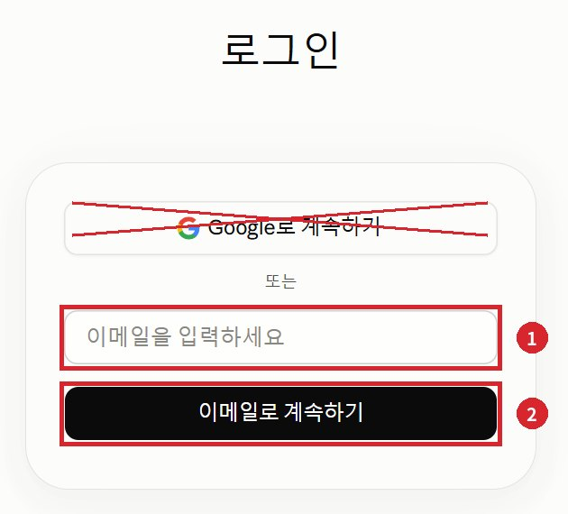
잠시 뒤 아래 화면이 나옵니다. 주소가 맞는지 확인하고 Claude 앱은 이 화면 그대로 둡니다. 인증 코드 칸은 비워 두셔도 됩니다. 주소를 잘못 넣으셨으면 이메일 주소 변경을 누르세요.
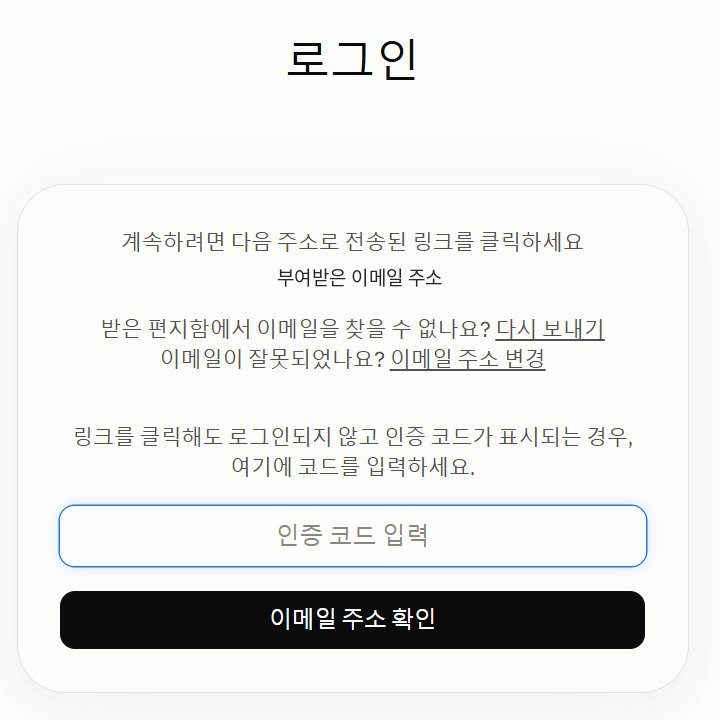
③④⑤ 크롬이나 엣지 같은 인터넷 창을 새로 열어 주소창에 email.oliven.kr을 입력합니다. 아니면 여기를 누르세요 → email.oliven.kr ↗. 사용자명에 조금 전 Claude에 넣었던 이메일 주소를 그대로, 암호에 부여받은 암호를 넣고 로그인합니다.
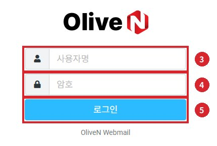
아래 표에서 내 이름을 찾아 사용자명(이메일 주소)과 암호를 확인하세요. 아래 표는 다섯 줄만 보입니다. 표 안에서 스크롤하시거나 버튼을 눌러 새 창에서 크게 보세요.
사용자명·암호 표 바로가기 ↗다른 선생님의 계정으로 로그인하지 않도록 주의해 주세요.
⑥⑦ 받은 편지함 맨 위에 있는 가장 최근 메일(Anthropic, ‘Claude.ai의 보안 링크가 도착했습니다’)을 누르고, 오른쪽에 열린 메일의 로그인 버튼을 누릅니다.
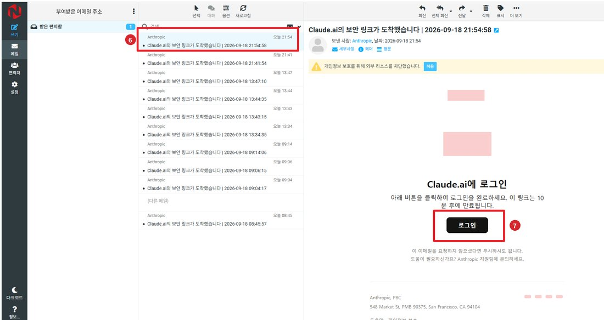
⑧ 새 탭에 ‘Claude을(를) 여시겠습니까?’ 창이 뜹니다. 파란색 취소가 아니라 Claude 열기를 누릅니다.
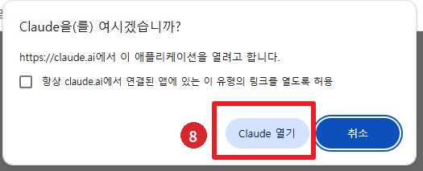
오늘 가장 많이 막히는 지점입니다. 여기만 확인해도 절반은 해결됩니다.
- 앱 왼쪽 맨 아래 계정 이름(부여받은 이메일 주소)을 누릅니다.
- 메뉴가 열리면 맨 위 목록에서 여주초등학교 Team 옆에 체크(✓)가 있는지 봅니다.
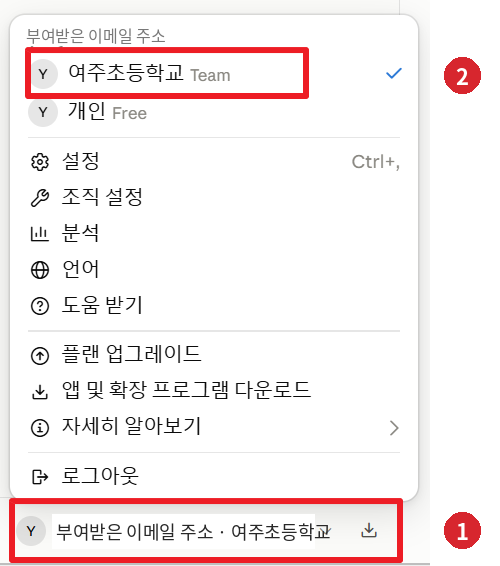
앱을 열고, 로그인하고, 여주초등학교 Team이 선택되어 있으면 오늘 실습은 전부 됩니다. 아래는 필요할 때만 펼쳐 보세요.
필요할 때 펼쳐 보기
실습 중에 해당 장면이 나오면 그때 펼쳐 보셔도 됩니다.
화면 가운데 ‘오늘 어떤 도움을 드릴까요?’ 입력창 왼쪽 아래에 채팅 | Cowork 버튼이 있습니다. Cowork를 누릅니다.
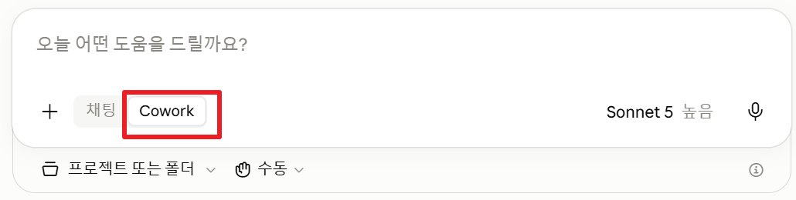
- 바탕화면 빈 곳에서 오른쪽 클릭 → 새로 만들기 → 폴더. 이름은 연수실습.
- 입력창 아래 ‘프로젝트 또는 폴더’를 클릭합니다.
- 메뉴 맨 아래 ‘폴더 추가’를 선택합니다.
- 바탕화면의 연수실습 폴더를 고릅니다.
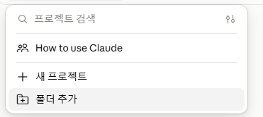
잘 됐는지 한 줄로 확인해 봅니다.
이 폴더에 ‘안녕하세요.txt’ 파일을 만들고, 오늘 날짜와 인사말을 한 줄 적어 줘.
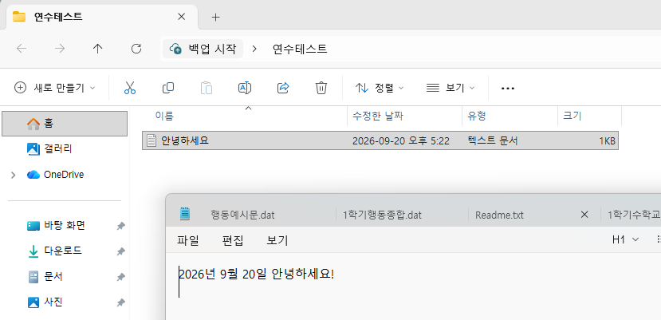
- 설정을 엽니다.
- 기능(Capabilities)으로 들어갑니다.
- ‘코드 실행 및 파일 생성’을 켭니다.
- 이제 사용자 지정(Customize) 안에 스킬이 보입니다.
입력창 오른쪽에 모델 이름이 적혀 있습니다. Sonnet으로 되어 있으면 그대로 두시고, 다른 것으로 되어 있으면 눌러서 Sonnet을 고르세요.
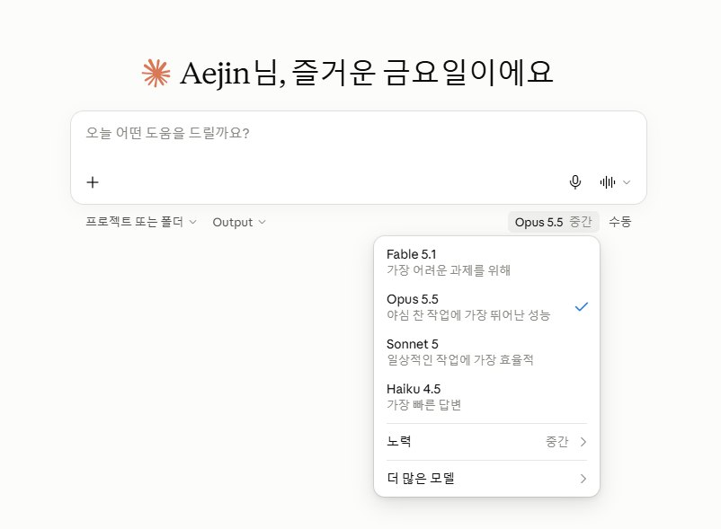
오늘은 이것
지금까지는 복사를 하면 이전에 복사한 게 날아갔습니다. 그래서 하나 붙여넣고, 다시 가서 복사하고, 또 붙여넣고 하셨을 겁니다.
윈도우 키를 누른 채 V를 눌러 보세요. 지금까지 복사한 것이 전부 남아 있습니다. 그중에 골라서 붙여넣으면 됩니다.
Win+V로 골라 쓰시면, 교안을 다시 찾아 들어가지 않으셔도 됩니다. 그래서 세팅에 넣어 뒀습니다.오늘 여러 번 물어보실 것 같아 미리 적어 둡니다. “내가 지금 얼마나 쓴 거지?”
- 오른쪽 위 프로필을 누릅니다.
- 설정 → 사용량으로 들어갑니다.
- 인터넷 창에서는 주소창에
claude.ai/settings/usage를 쳐도 됩니다.
초기화까지 남은 시간이 같이 보입니다
세션과 따로 계산됩니다
잘 안 될 때
- 인터넷 창이 아니라 설치한 Claude 앱에서 보고 계신가요?
- 왼쪽 아래 계정 메뉴에서 여주초등학교 Team이 선택되어 있나요?
- 앱이 최신 버전인가요? 완전히 종료했다가 다시 열면 업데이트가 적용됩니다.
- 관리자 권한 없이 설치하셨다면 Cowork가 빠진 채로 설치됩니다. 다시 설치가 필요합니다.
- Claude 앱에 넣은 이메일이 부여받은 주소와 정확히 같은지 확인하세요. 글자 하나만 달라도 다른 계정입니다.
- 메일함도 본인 계정으로 로그인하셨나요?
- 1~2분 기다린 뒤 새로고침하고, 스팸함도 확인하세요.
- 그래도 없으면 Claude 앱 화면의 다시 보내기를 눌러 새로 받으세요.
메일함으로 돌아가 같은 메일의 로그인 버튼을 다시 누르면 창이 다시 뜹니다. 10분이 지났다면 Claude 앱에서 다시 보내기를 눌러 새 메일을 받은 뒤 가장 위 메일로 다시 시도하세요.
학교 PC는 보안 정책 때문에 설치가 막혀 있는 경우가 많습니다. 정보(전산) 담당 선생님께 ‘Claude 데스크톱 앱 설치’를 요청해 주세요. Windows 업데이트를 먼저 마친 뒤 다시 시도하면 해결되기도 합니다.
- 시작 메뉴에서 Windows 기능 켜기/끄기를 검색해 엽니다.
- 가상 머신 플랫폼에 체크하고 확인을 누릅니다.
- 컴퓨터를 다시 시작한 뒤 Claude 앱을 엽니다.
정상입니다. 처음 한 번은 작업 환경 파일(약 2GB)을 내려받느라 몇 분 걸립니다. 한 번 받고 나면 다음부터는 빠릅니다.
아닙니다. 강사 화면으로 시연을 함께 보시고, 가능한 부분은 채팅 기능으로 따라 하실 수 있습니다. 오늘 만든 결과물과 자료는 전부 파일로 나눠드립니다. 미리 알려 주시면 자리 배치나 진행에 반영하겠습니다.
클로드가 요즘 바뀌는 중입니다. 옆자리 선생님과 화면이 다를 수 있습니다. 둘 다 정상이니 놀라지 마세요. 입력창 아래를 한 번 보시면 됩니다.
채팅 / Cowork가 보인다
아무것도
없다
먼저 내 컴퓨터가 되는지 확인합니다.
윈도우 버전 확인: Windows 키 + R → winver 입력 → 확인.
그다음 앱을 내려받아 설치합니다.
- 공식 다운로드 페이지에서 설치 파일을 받습니다. 대부분의 Windows PC는 기본(x64) 버전이면 됩니다.
- 받은 파일을 두 번 클릭해 설치합니다.
- 설치가 끝나면 Claude 앱이 열리고 시작하기 버튼이 보입니다. 그 버튼을 누릅니다.
왜 클로드일까
일을 맡기는 AI, 그리고 오늘의 질문 하나 — “이거, 매주 똑같이 하고 있나?”
AI는 지금 묻고 답하는 AI에서 일을 맡기는 AI(에이전트 AI)로 넘어가고 있습니다. 챗GPT·제미나이·클로드 모두 그쪽으로 가고 있습니다.
그중 일을 맡기는 쪽은 지금 클로드가 가장 앞서 있다고 봅니다. 여러 AI를 두루 써 보고 오늘 클로드를 고른 이유입니다.
가르친 방법도 달랐습니다. 사람이 답마다 점수를 매겨 길들이는 대신, 지켜야 할 원칙을 글로 적어 두고(‘헌법’이라고 부릅니다) 그 원칙에 비추어 스스로 답을 고치도록 훈련했습니다. 오늘 여러 번 보실 “지어내지 않고 되묻는” 모습이 이 방식과 닿아 있습니다.
그래도 오늘 배우시는 시키는 방법은 어느 AI에서나 똑같이 통합니다. 챗GPT를 쓰시는 분도 그대로 가져가시면 됩니다.
클로드 모델 이름 — Opus · Sonnet · Haiku · Fable, 무슨 뜻일까요?
!!
| 이름 | 어느 나라 말 | 원래 뜻 | 무엇인가 |
|---|---|---|---|
| Haiku 하이쿠 | 일본어 俳句 | 익살스러운 구절 | 5·7·5, 17음절. 가장 짧은 시 |
| Sonnet 소네트 | 이탈리아어 sonetto | 작은 노래 | 14줄로 짓는 정형시. 셰익스피어 소네트 |
| Opus 오퍼스 | 라틴어 | 일, 작품 | 음악의 작품 번호(쇼팽 Op. 9). 대작·역작 |
| Fable 페이블 | 라틴어 fabula → 프랑스어 → 영어 | 이야기 | 이솝 우화처럼 교훈을 담은 이야기 |
| Mythos 미토스 | 그리스어 μῦθος | 이야기, 신화 | 신화. 가장 큰 이야기 |
한마디로 — “나라는 제각각인데 전부 글이나 작품의 형식입니다. 하이쿠(짧은 시) → 소네트(14줄 시) → 오퍼스(대작) 순으로 길어지고, 모델 크기도 그 순서입니다.”
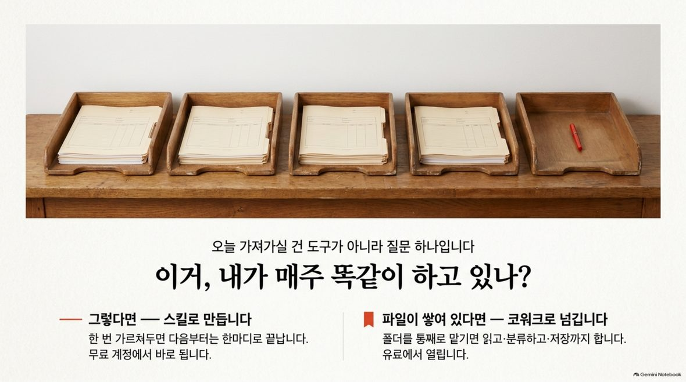
“이거, 내가 매주 똑같이 하고 있나?”
그렇다면 → 스킬로 만듭니다. 한 번 가르쳐두면 다음부터는 한마디로 끝납니다. 무료 계정에서도 바로 됩니다.
파일이 쌓여 있다면 → 코워크로 넘깁니다. 폴더를 통째로 맡기면 읽고·분류하고·저장까지 합니다. 유료에서 열립니다.
한 해 내내 같은 자료를 펴 놓고 한다면 → 프로젝트 방에 넣어 둡니다. 성취기준·양식을 한 번 넣어 두면 그 방에서는 매번 올리지 않아도 됩니다. 무료에서도 다섯 개까지 됩니다.
이번 주에 무엇을 두 번 이상 하셨습니까
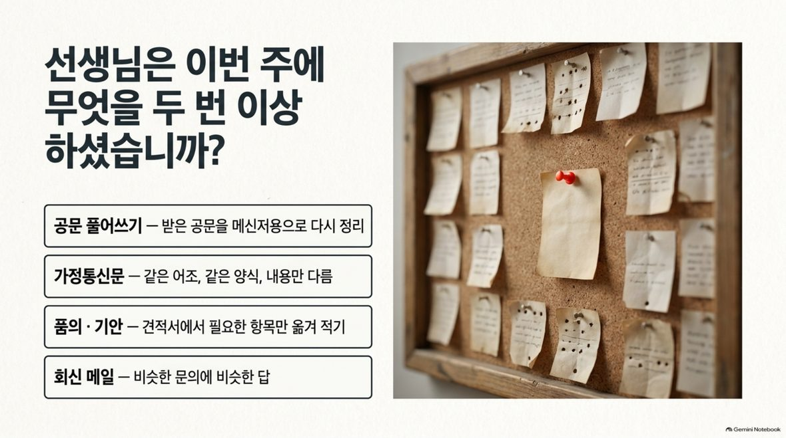
오늘 다룰 것은 셋
| 구분 | 무엇인가 | 플랜 |
|---|---|---|
| 스킬 | 클로드에게 건네는 나만의 업무 매뉴얼 | 무료로 가능 |
| 코워크 | 지정한 폴더에서 직접 일하는 에이전트 | Pro 이상 |
| 프로젝트 | 업무 하나에 방 하나 — 자료와 지침을 넣어 두는 곳 | 무료 5개 · Pro 이상 제한 없음 |
같은 방법으로 되는 학교 업무 넷
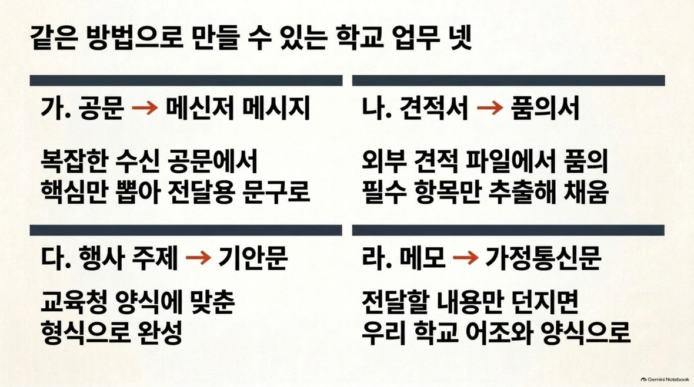
스킬 — 한 번 가르쳐두기
오늘 전원이 하나씩 만듭니다. 무료 계정에서도 됩니다.
먼저 보여드립니다 — 1분이면 끝납니다
- 공문 파일 하나를 대화창에 끌어다 놓습니다.
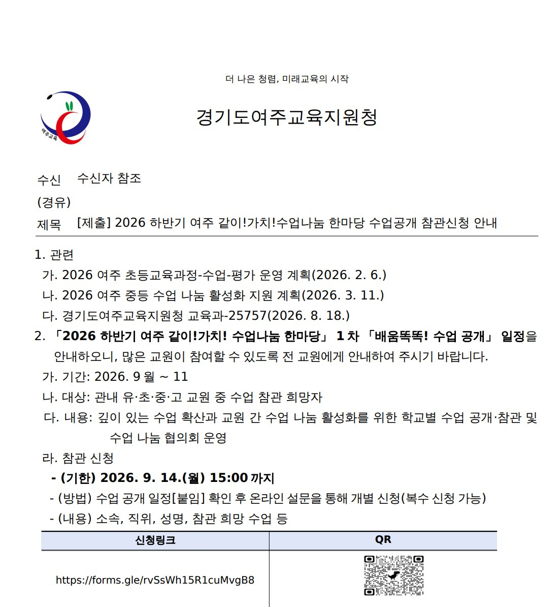
- 그리고 한 줄만 칩니다.
- 클로드가 몇 가지 되묻습니다. 눌러서 고르기만 하면 됩니다.
- 끝입니다.
공문 안내 메시지로 바꿔 줘.
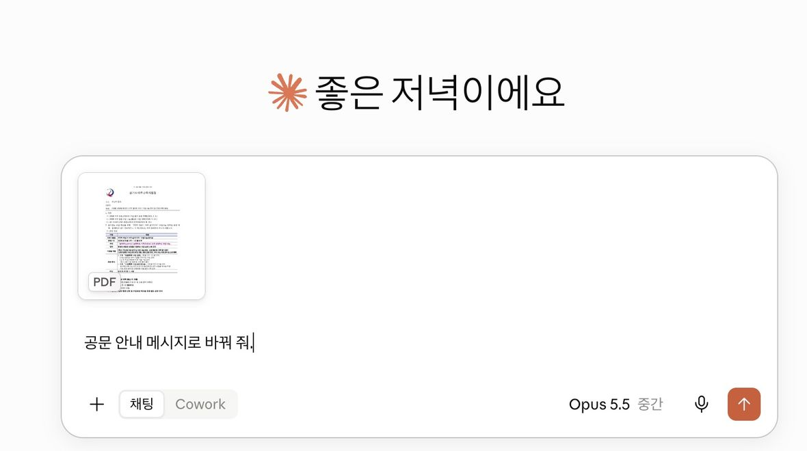
공문을 메시지로. 이만큼만 쳐도 켜집니다.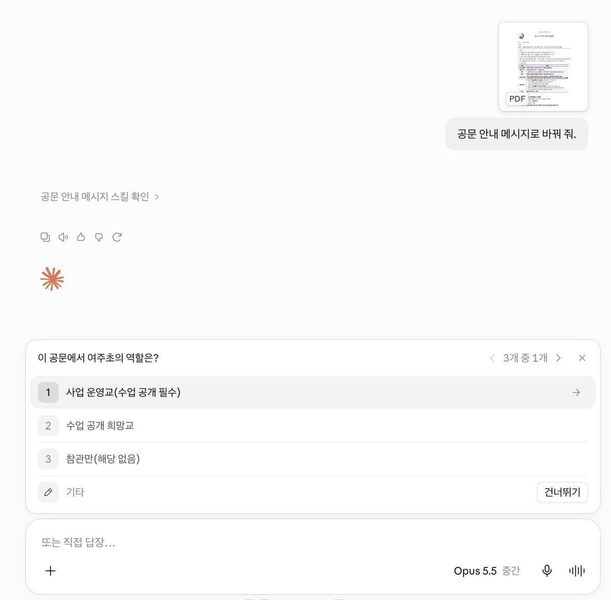
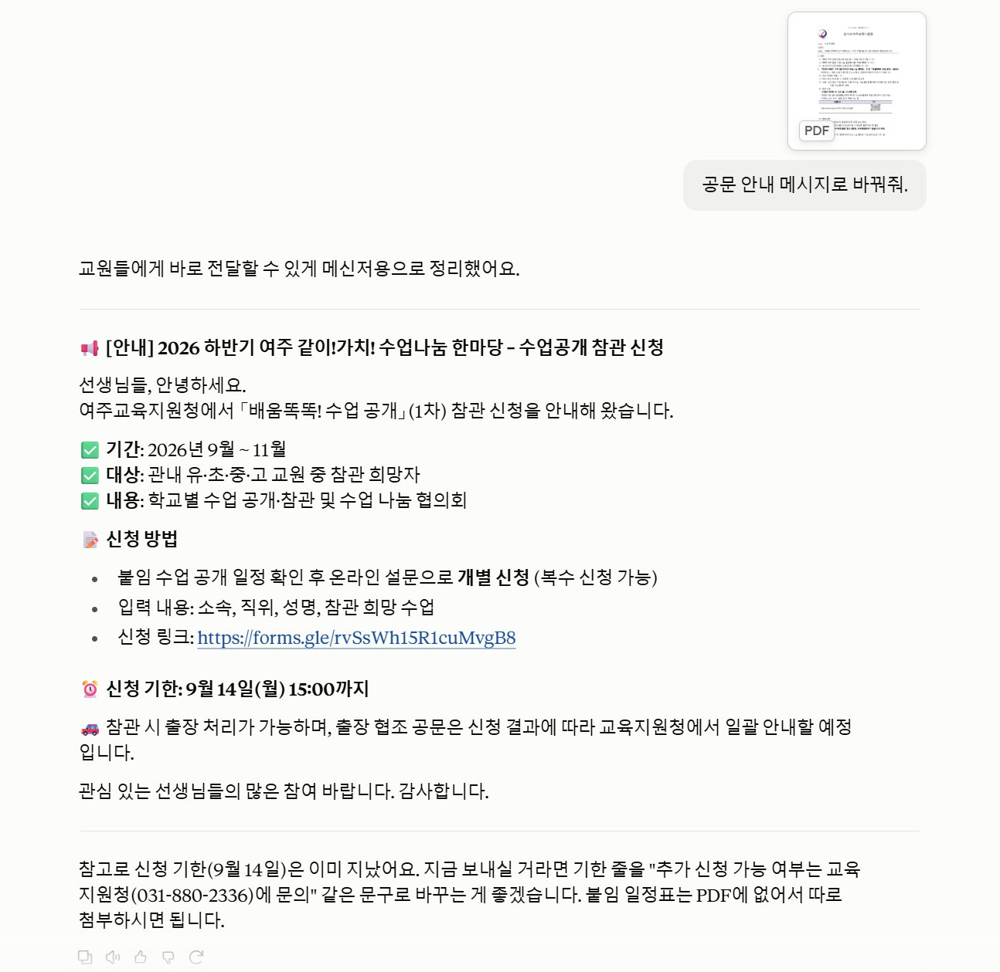
그래서 스킬이 무엇인가
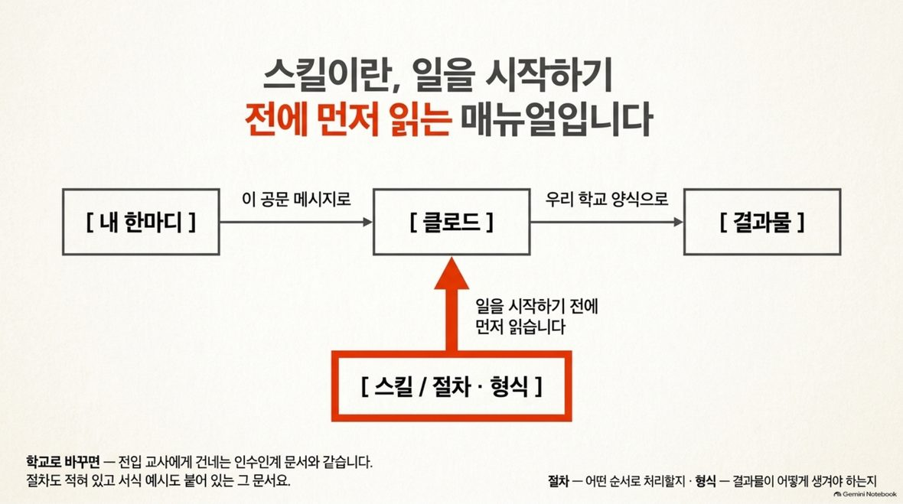
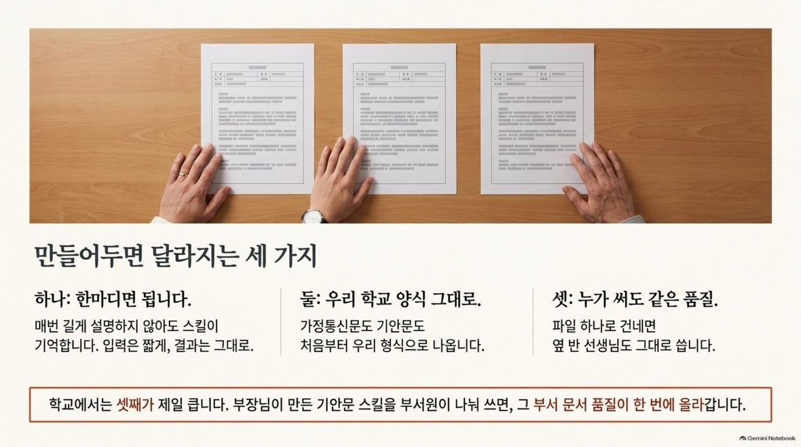
만드는 법은 넷
말로 시키기
남이 만든 파일
받아 올리기
화면을 녹화해서
만들기
직접 작성해
올리기
미리 답해 드립니다
되나요?
한글(hwp)은 기본으로 없습니다. 한글용 스킬을 따로 올려야 합니다.
뭐가 달라요?
나왔는데요
만들어요?
어디서 켜나요 — 설정 화면 보기
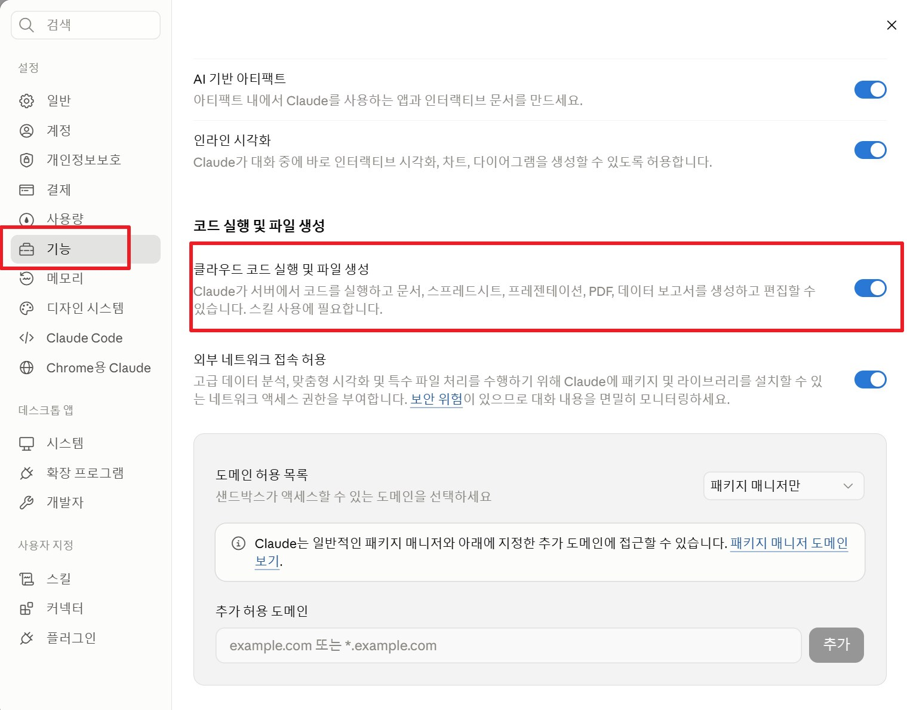
만듭니다 — 한 줄에 한 쌍
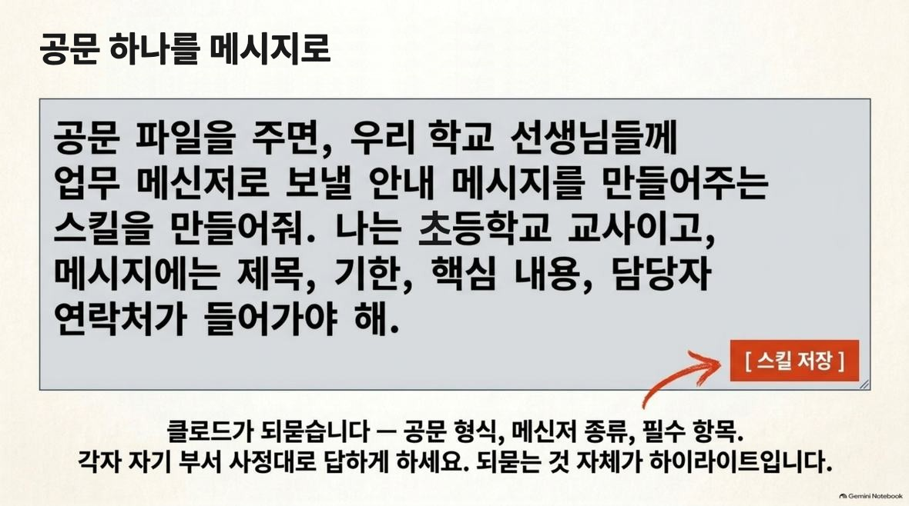
공문 파일을 주면, 우리 학교 선생님들께 업무 메신저로 보낼 안내 메시지를 만들어주는 스킬을 만들어 줘. 나는 초등학교 교사이고, 메시지에는 제목, 기한, 핵심 내용, 담당자 연락처가 들어가야 해.
스킬은 한 줄이면 만들어집니다. 다만 그냥 시키면 내 말투가 안 들어간 껍데기가 나옵니다. 그래서 공문과 그 결과 메시지를 한 쌍으로 같이 줍니다.
메시지만 주면 클로드는 “이 선생님은 이렇게 쓴다”까지만 배웁니다. 정작 필요한 건 “공문의 무엇을 버리고 무엇을 어떻게 바꾸는가”인데, 그건 바뀌기 전과 후를 나란히 줘야만 배웁니다.
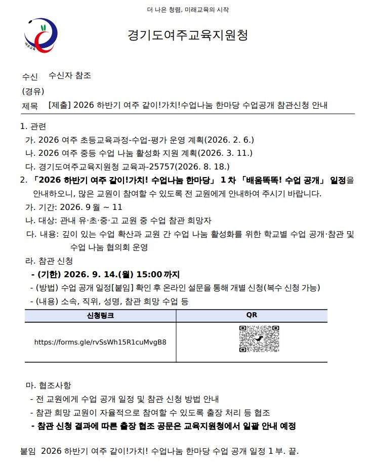
올린 공문을 받아 내가 교직원께 보낸 메시지가 아래에 있어. 이렇게 바꾸는 일을 스킬로 만들어 줘. 내가 무엇을 빼고, 어떻게 바꿨는지, 공문에 없는데 내가 채운 것은 무엇인지 먼저 비교해서 보여 줘. 공문에 없는 학교 사정은 지어내지 말고 [확인 필요]로 남겨 줘. '공문을 메시지로', '선생님들께 보낼 안내 써 줘', '공문 안내 메시지로 바꿔 줘'라고 하면 켜지게 해 줘. 모자란 정보는 나한테 물어봐. [내가 보낸 메시지] 여주초 교직원분들께 안내드립니다. 오늘 동료장학(관내 수업공개) 및 교육성과 보고회가 있습니다. 동료장학을 관내 수업 공개로 실시합니다. *3교시- 특수학급, 복합특수 수업 공개 *4교시- 1~2학년, 전담 및 비교과 교사 수업 공개 *5교시- 3~4학년 수업 공개 *6교시- 5~6학년 수업 공개 6교시 이후 14:30부터 시청각실에서 사후 협의회를 합니다. * 참석 대상: 전 교원, 관내 참관 신청자 사후 협의회에서는 AI·디지털 활용 선도학교/ 경기 미래형 과학실/ Why Up 선도학교 운영 성과 보고 및 수업실천 사례 나눔을 합니다. 끝이 보이니 조금만 더 기운내주시고요~ 공개수업도 파이팅!! *^^* 이따가 사후 협의회 때 뵙겠습니다~♡
자세한 버전 — 한 줄 한 줄이 무슨 뜻인지 보고 싶으시면
올린 파일은 우리 학교에 온 공문이고, 아래는 그 공문을 받아 내가 교직원께 실제로 보낸 메시지야. 이렇게 공문을 받아 메시지로 바꾸는 일을 앞으로 반복해서 쓸 수 있게 스킬로 만들어 줘. 만들기 전에 둘을 나란히 비교해서, 내가 어떻게 바꿨는지 먼저 파악해 줘. - 공문에서 무엇을 버렸는지 - 공문의 무엇을 어떻게 바꿔 썼는지 - 공문에 없는데 메시지에는 있는 것은 무엇인지 이건 내가 학교 사정을 알아서 채운 부분이야. 앞으로 여기는 지어내지 말고 [확인 필요]로 남겨야 한다는 뜻이야. 스킬 이름과 설명에 '공문', '메시지', '안내'라는 말을 넣어 줘. 아래 셋 중 어느 말이 나와도 이 스킬이 켜지게 해 줘. - 공문 안내 메시지로 바꿔 줘 - 공문을 메시지로 - 선생님들께 보낼 안내 써 줘 모자란 정보가 있으면 나한테 물어봐. [내가 보낸 메시지] 여주초 교직원분들께 안내드립니다. 오늘 동료장학(관내 수업공개) 및 교육성과 보고회가 있습니다. 동료장학을 관내 수업 공개로 실시합니다. *3교시- 특수학급, 복합특수 수업 공개 *4교시- 1~2학년, 전담 및 비교과 교사 수업 공개 *5교시- 3~4학년 수업 공개 *6교시- 5~6학년 수업 공개 6교시 이후 14:30부터 시청각실에서 사후 협의회를 합니다. * 참석 대상: 전 교원, 관내 참관 신청자 사후 협의회에서는 AI·디지털 활용 선도학교/ 경기 미래형 과학실/ Why Up 선도학교 운영 성과 보고 및 수업실천 사례 나눔을 합니다. 끝이 보이니 조금만 더 기운내주시고요~ 공개수업도 파이팅!! *^^* 이따가 사후 협의회 때 뵙겠습니다~♡
만들기 전에 이런 비교가 먼저 나옵니다
프롬프트에 “먼저 비교해서 보여 줘”라고 적었기 때문에, 스킬을 만들기 전에 버린 것 · 바꾼 것 · 채운 것을 먼저 정리해 보여 줍니다.
이렇게 나옵니다 — 실제 화면
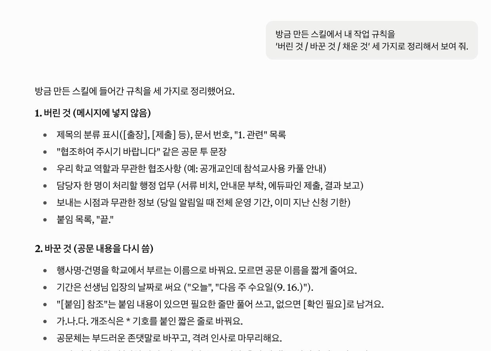
정리하면 이렇습니다
| 구분 | 무엇을 |
|---|---|
| 버린 것 | 관련 근거 3줄 · 건명 · 붙임 목록 · K-에듀파인 제출 절차 |
| 바꾼 것 | “2026. 9. 16.(수) ~ 11. 11.(수)” → “오늘” “협조하여 주시기 바랍니다” → “조금만 더 기운내주시고요~” “동료장학” → “동료장학(관내 수업공개)” — 용어를 괄호로 풀어 줌 |
| 채운 것 | 교시별 공개 일정 · 14:30 시청각실 · 선도학교 성과 보고 공문에 없습니다. 학교가 넣은 것입니다 |
[확인 필요]로 남깁니다.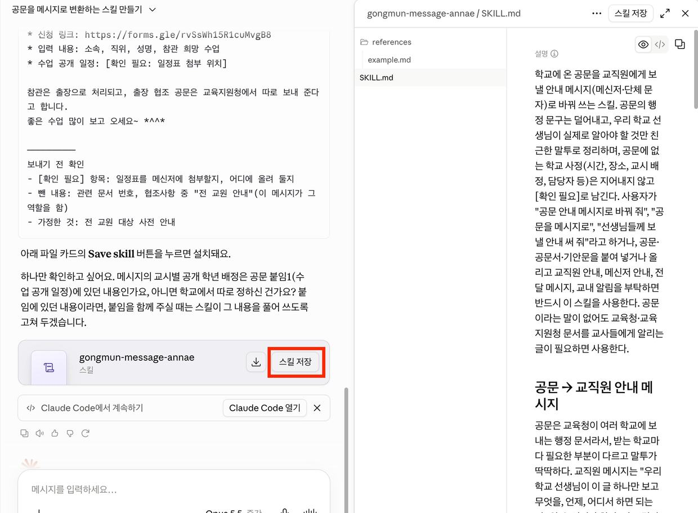
진짜 도는지 확인합니다
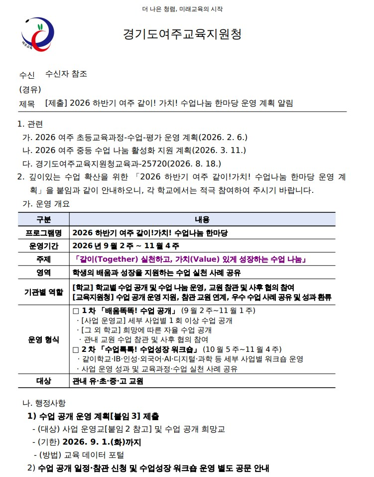
저장만 하고 끝내면 정말 되는지 모릅니다. 한 번만 돌려 보고 넘어갑니다.
- 새 대화창을 엽니다. 지금까지 쓰던 창을 닫으셔야 합니다.
- 위에서 받은 확인용 공문(교육과-11731)을 끌어다 놓습니다.
- 아래 한 줄만 칩니다.
공문 안내 메시지로 바꿔 줘.
공문을 메시지로. 도 됩니다. 아까 셋을 다 등록해 뒀으니 어느 걸 치셔도 켜집니다.이렇게 나옵니다 — 실제 결과
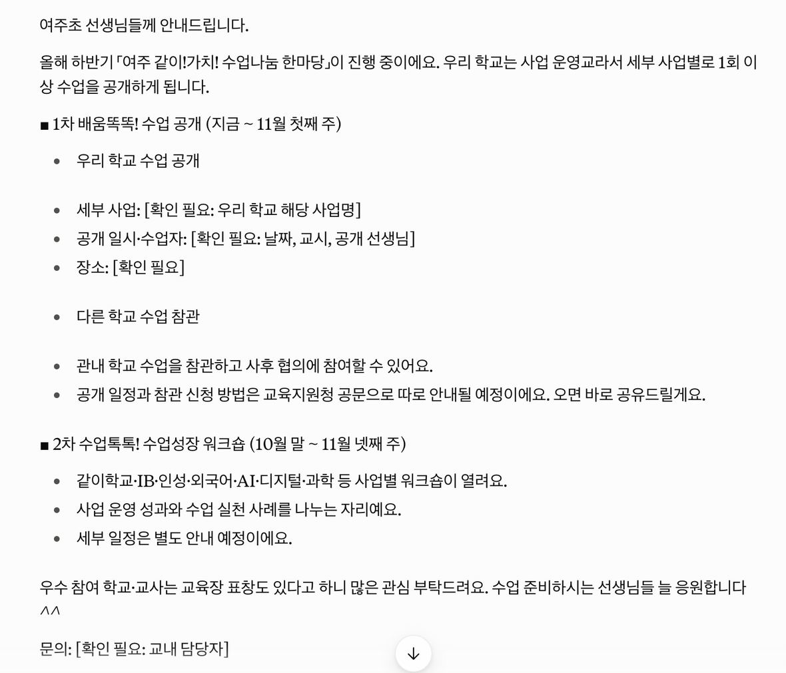
[확인 필요]가 다섯 군데 있습니다.세부 사업명, 공개 일시·수업자, 장소, 교내 담당자. 공문에 없는 것들입니다. 그래서 지어내지 않고 자리만 비워 뒀습니다. 선생님이 채워 넣으시면 됩니다.
[확인 필요]로 남겨”라고 하신 그 한 줄이 지금 그대로 지켜진 것입니다.맨 앞에서 제가 보여드린 그 장면이, 이제 선생님 화면에서 일어납니다.
공문이 하루에 열 건 와도 같습니다. 올리고, 한 줄.
고쳐 쓰고, 옆 반과 나눕니다
따로 편집기를 열 필요가 없습니다. 말로 고칩니다.
이 스킬에서 담당 부서를 '연구부'로 바꿔 줘. 그리고 스킬을 수정해 줘.
이렇게 나옵니다 — 실제 화면
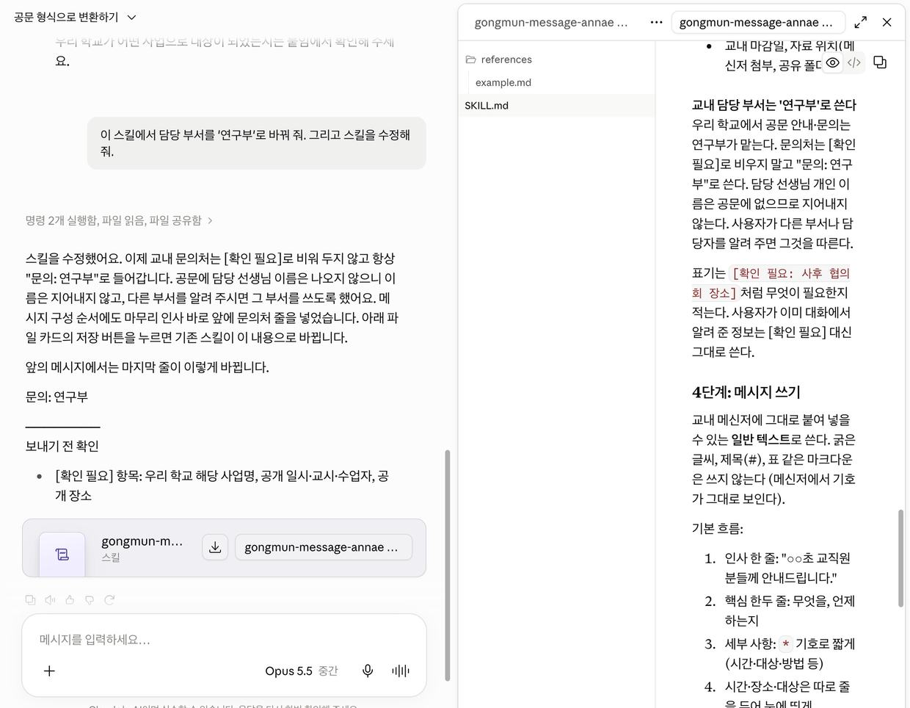
쓰는 법은 둘 — 만들어두고 잊어버리셔도 됩니다
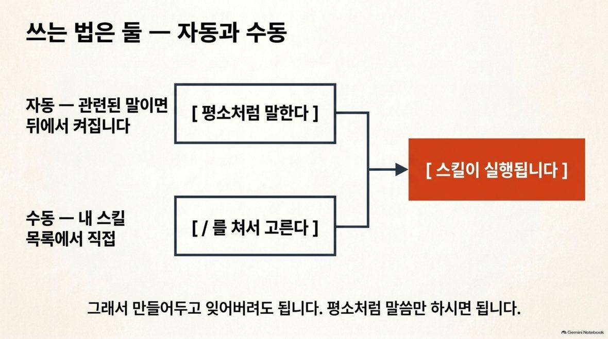
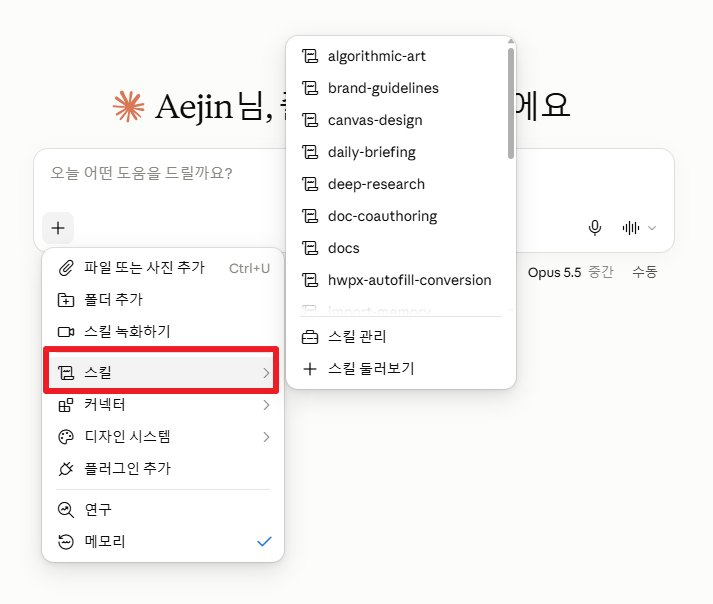
공문 스킬은 직접 만드셨습니다. 이번 것은 받아서 올립니다 — 슬라이드의 ‘나. 남이 만든 파일 받아 올리기’가 이것입니다.
올립니다 — 압축은 풀지 않습니다
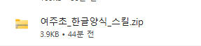
- 위의 ⬇ 한글 스킬 받기를 누릅니다. 4KB짜리 작은 파일입니다.
- 압축을 풀지 마세요. 받은 zip 파일을 그대로 씁니다.
- 설정 → 사용자 지정(Customize) → 스킬로 들어갑니다.
- 오른쪽 위 ＋ 추가 → 스킬 업로드.
- 받은 zip 파일을 고릅니다.
- 업로드를 누르면 끝입니다.
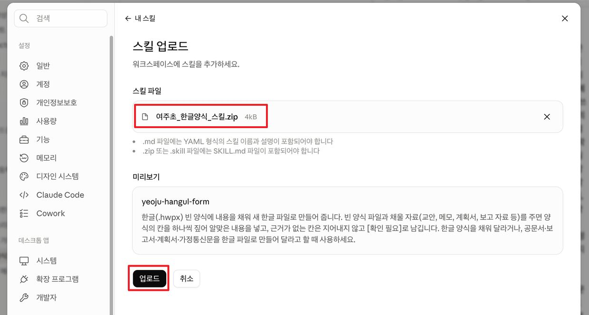
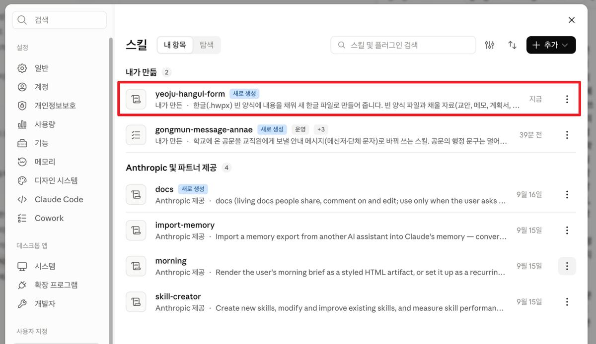
써봅니다 — 한글 파일이 나옵니다
클로드에 원래 들어 있는 건 워드 · 엑셀 · PPT · PDF뿐입니다. 한글은 없습니다. 우리나라에서만 쓰는 형식이라서요.
그런데 스킬 하나를 올렸더니 한글 파일이 나옵니다. 그게 지금 보실 장면입니다.
지난번 안내장을 이번 행사로 바꾸는 일을 해 봅니다. 행사 때마다 하시는 그 일이요.
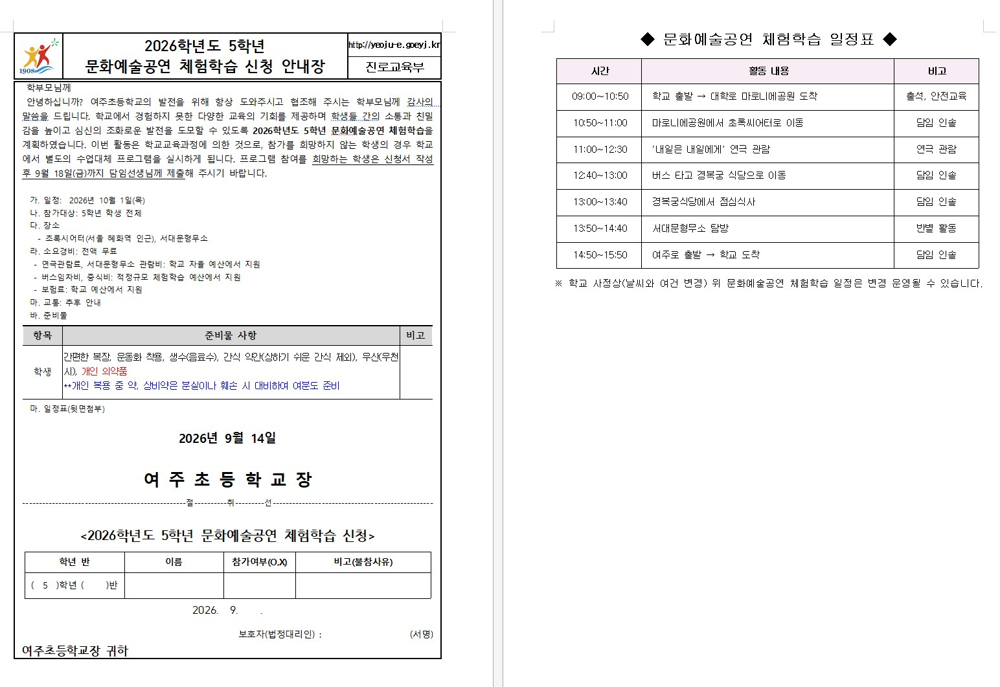
- 새 대화창을 엽니다.
- 위에서 받은 안내장(.hwpx)을 끌어다 놓습니다. 5학년 연극 관람 · 서대문형무소 안내장입니다
- 아래를 붙여넣습니다. 교무부에서 받은 메모 그대로입니다 — 문장이 아니라 항목만 적혀 있습니다
올린 안내장을 아래 행사로 바꿔 줘.
4학년 가을 현장체험학습 · 국립과천과학관
11월 6일(금) 9시 출발, 15시쯤 학교 도착
대상 4학년 전체 · 비용 없음
(입장료·버스비는 적정규모학교 육성 예산, 보험료는 학교 예산)
점심 도시락 각자 · 신청서는 10월 30일(금)까지 담임에게
준비물: 간편복, 운동화, 물, 간식 조금, 우산, 개인 약, 이름표
일정: 09:00 출발 / 10:30 도착·안전교육 / 10:40 상설전시관
12:00 점심 / 13:00 천체투영관 / 14:00 출발 / 15:00 도착
- 표의 칸과 줄 수는 그대로 두고 글자만 바꿔 줘
- 5학년 연극·서대문형무소 내용이 한 군데도 남지 않게 다 바꿔 줘
- 절취선 아래 신청서도 4학년에 맞게 바꿔 줘
- 내가 안 준 내용은 지어내지 말고 [확인 필요]로 남겨 줘
- 새 한글 파일로 만들어 줘. 올린 파일은 건드리지 마
모르는 건 물어봐.
안 열리면 — “내용을 화면에 보여 줘” 또는 “워드 파일로 만들어 줘”라고 하시면 됩니다. 한글에 붙여넣으시면 되니까요. 스킬 안에 그 대안도 적혀 있어서 클로드가 알아서 그렇게 합니다.
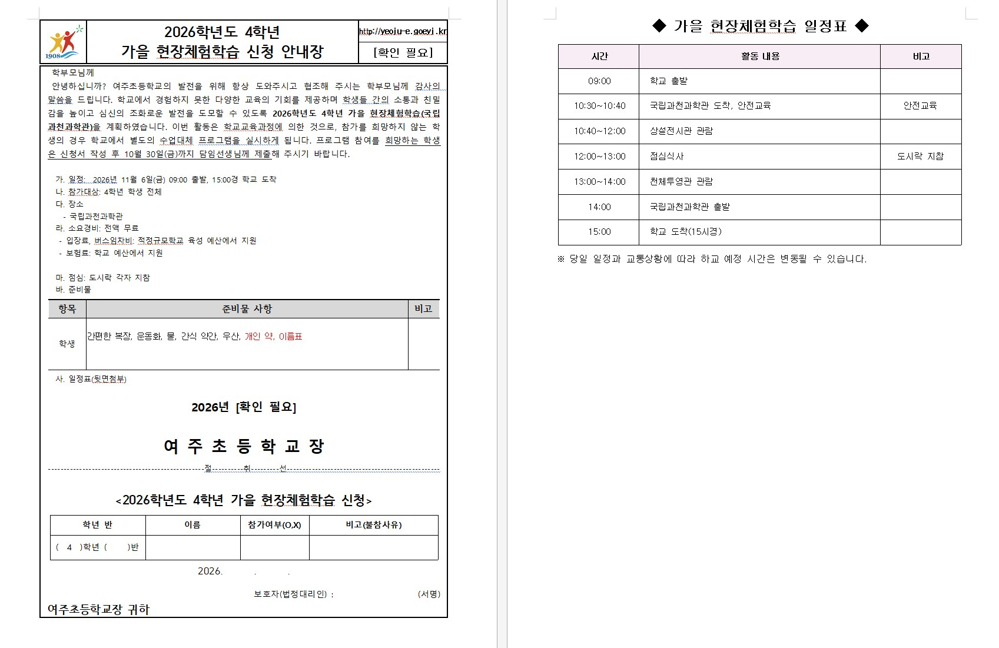
Ctrl+F로 “서대문”과 “연극”을 찾아 보세요. 하나도 안 나오면 성공입니다. 이 확인이 제일 중요합니다 — 지난 행사 문구가 한 줄 남는 게 가장 흔한 실수입니다. 남아 있으면 그 줄만 다시 시키시면 됩니다.연습 말고 진짜 업무로, 이번 주 안에 한 번. 이번 주에 두 번 이상 하신 일을 하나 골라, 클로드와 한 번 제대로 해 보고 끝에 이 한 줄을 붙이세요.
방금 한 작업 방식과 결과물 형식이 마음에 들어. 앞으로 반복해서 쓸 수 있게 스킬로 만들어 줘.
스킬까지 써보시면 글은 잘 나옵니다. 그런데 파일 정리나 저장은 결국 내가 하네 싶어집니다.
채팅은 훌륭한 동료지만 손이 없습니다. 그 손을 붙인 것이 코워크입니다 — 다음 탭에서 봅니다.
코워크 — 내 자리에 앉은 동료
채팅은 물어보면 답하고, 코워크는 시키면 해냅니다.
챗봇과 에이전트
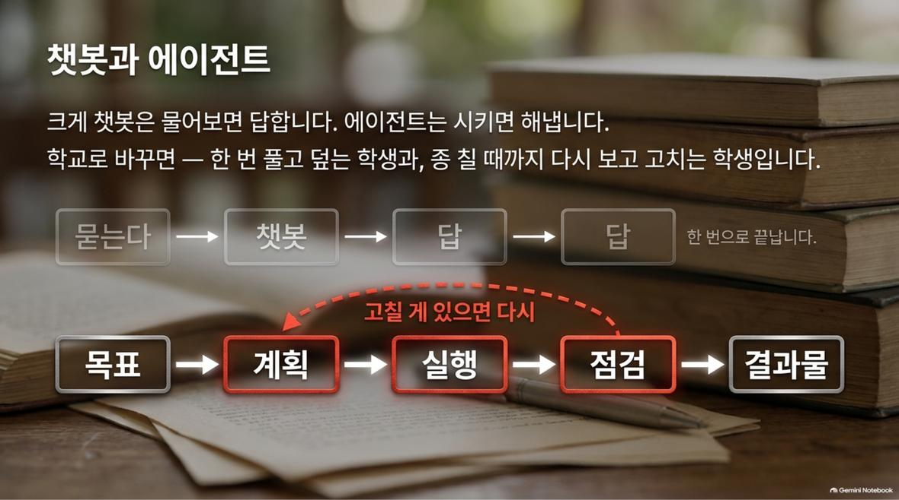
채팅과 코워크는 무엇이 다른가
지금까지 쓰신 건 아는 게 많은 동료에게 물어보고 받아 적는 것이었습니다. 코워크는 그 동료가 제 자리에 앉아 직접 파일을 열고 일해주는 것입니다.
| 구분 | 클로드 채팅 | 클로드 코워크 |
|---|---|---|
| 플랜 | 무료 | Pro 이상 · 데스크탑 앱 |
| 방식 | 입력 → 출력 (한 번) | 계획 → 실행 → 점검 (반복) |
| 파일 | 한 대화에 20개까지 · 파일당 500MB | 지정한 폴더에 직접 접근 · 제한 없음 |
| 결과물 | 채팅창 안에 남습니다 | 내 폴더에 실제 파일로 저장됩니다 |
| 맞는 일 | 번역 · 요약 · 질의응답 등 단발 | 파일 대량 정리 · 여러 단계 자동 처리 |
무료에서 코워크가 열린 것은 아닙니다. 폴더 연결은 여전히 Pro 이상입니다. 위 표는 그대로 맞습니다.
500MB가 어느 정도인가 — 그리고 진짜 걸리는 건 개수입니다
간단한 건 채팅에서 하세요. 여러 단계를 한 번에 끝내야 할 때만 코워크로 가시면 됩니다. 오늘 연수용 계정은 여러 분이 같이 쓰니 특히 그렇습니다.
시작 전 준비 세 가지
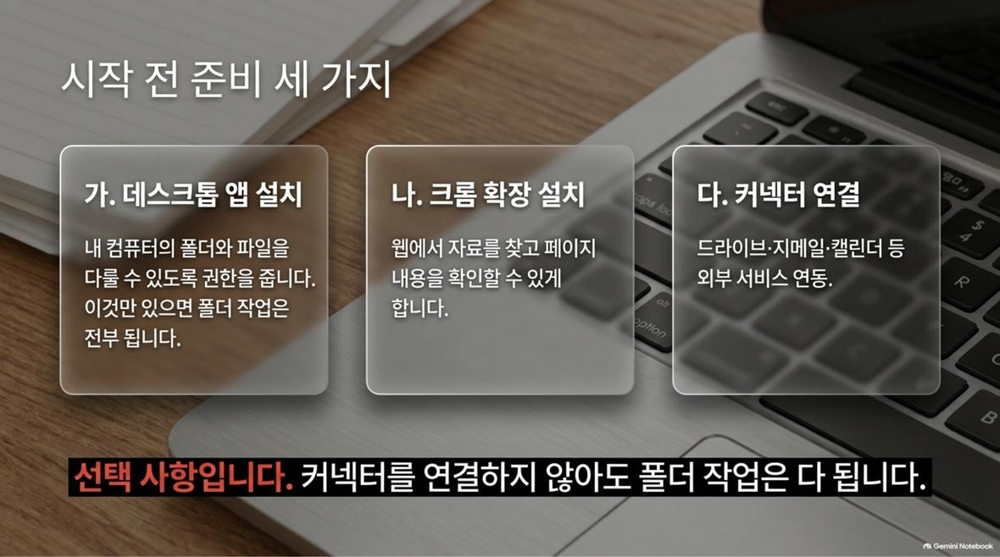
이것만 있으면 폴더 작업은 전부 됩니다
오늘은 안 쓰셔도 됩니다 · 유료 플랜 전용 ⬇ 크롬에서 설치
선택 사항입니다
웹 검색이나 문서 작성처럼 내 파일이 필요 없는 일은 덮개를 닫아도 계속되고, 핸드폰 클로드 앱으로 이어서 보실 수 있습니다. (학교 계정에서 관리자가 이 기능을 꺼 두었다면 예외입니다)
Haiku는 빠르지만 파일을 열어 보지 않고 이름만 보고 처리할 때가 많습니다. Opus는 더 꼼꼼하지만 사용량을 많이 써서 연수 중에 사용량이 먼저 바닥날 수 있습니다.
다. 커넥터 연결하는 법 — 오늘은 안 하셔도 됩니다
- 대화창 왼쪽 아래 ＋를 누릅니다.
- 커넥터에 마우스를 올립니다.
- 쓰실 것만 켜기로 바꿉니다 — 드라이브 · 지메일 · 캘린더.
- 구글 로그인 화면이 뜹니다. 학교 계정으로 허용하시면 끝입니다.
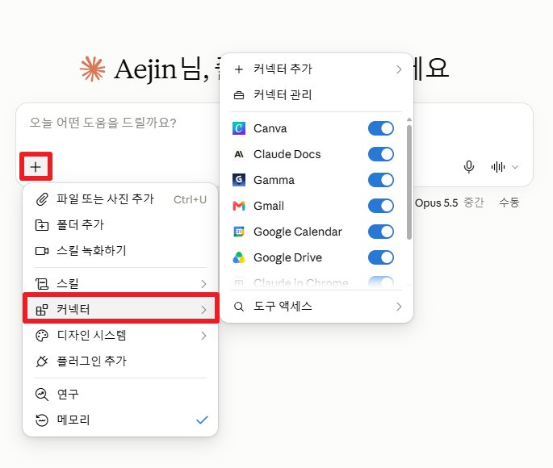
학교 계정은 관리자가 막아 둘 수 있습니다. 연결이 안 되면 그 때문이니, 개인 구글 계정으로 해 보시거나 넘어가시면 됩니다.
쓰는 순서는 셋
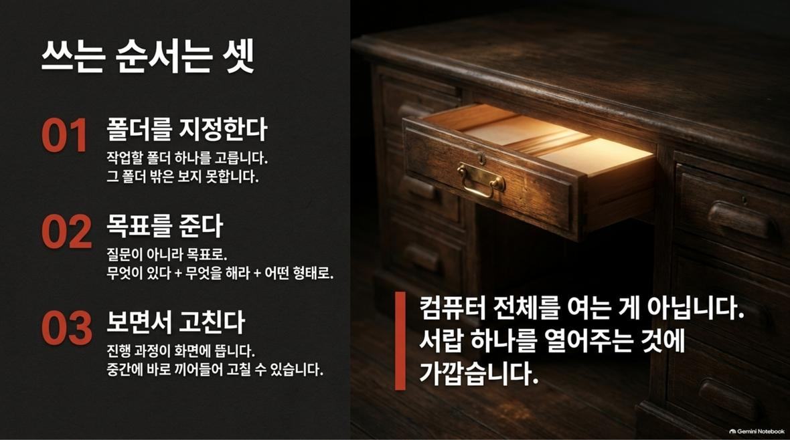
작업할 폴더 하나를 고릅니다. 그 폴더 밖은 보지 못합니다.
질문이 아니라 목표로. 무엇이 있다 + 무엇을 해라 + 어떤 형태로.
진행 과정이 화면에 뜹니다. 중간에 바로 끼어들어 고칠 수 있습니다.
컴퓨터 전체를 여는 게 아닙니다. 서랍 하나를 열어주는 것에 가깝습니다.
지정한 폴더 밖은 보지도 못합니다. 그래서 실제로 쓰실 때도 바탕화면이나 내 문서를 통째로 맡기지 마시고, 그 일에 필요한 폴더 하나만 맡기세요.
물어보고 할까, 알아서 할까
입력창 오른쪽 끝에 수동 / 자동이 있습니다. 클로드가 무언가 하기 전에 물어볼지를 정하는 자리입니다.
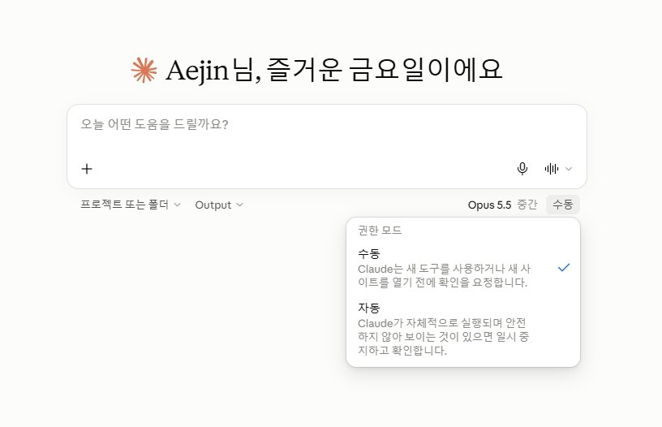
오늘은 이것
먼저 몸을 풉니다 — 폴더 하나 맡겨 보기
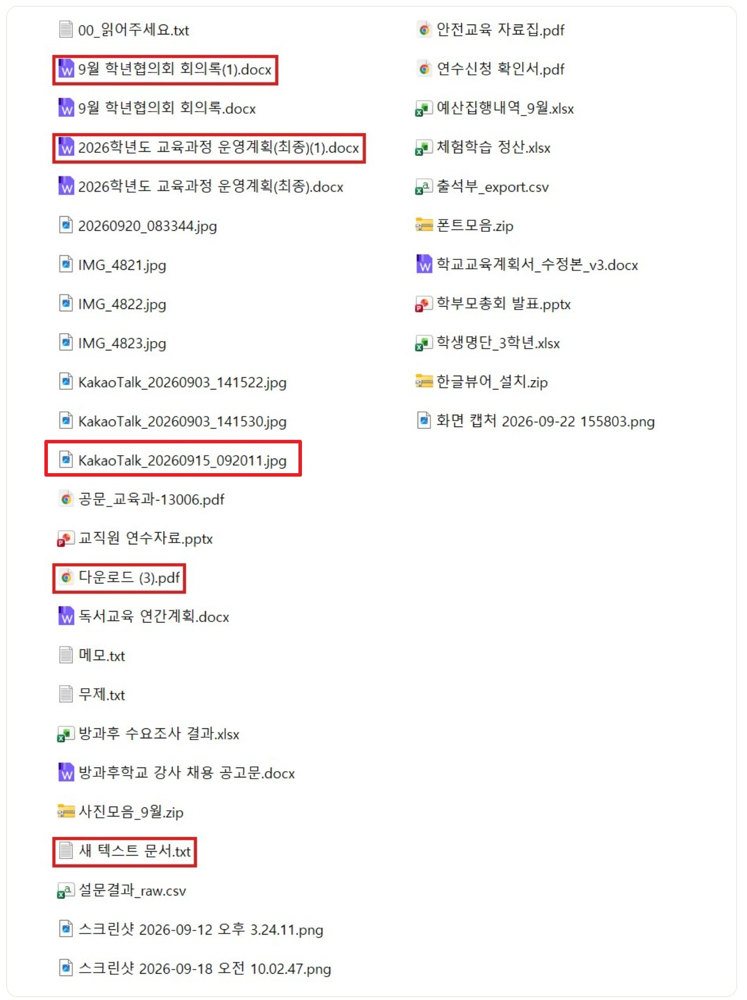
프롬프트 두 줄이라 실패할 일이 거의 없습니다. 폴더 연결이 되는지만 확인하고 다음으로 갑니다.
- 받은 폴더를 압축 풀어 바탕화면에 둡니다. 연결할 것은 안쪽 ‘다운로드’ 폴더입니다.
- 입력창 아래 Cowork(협업) → 폴더 추가로 그 폴더를 고릅니다. Cowork가 안 보이면 ＋에서 고르세요
- 허용 창이 뜨면 항상 허용을 누릅니다. ‘삭제’라는 말이 보여도 괜찮습니다 — 지울 때는 따로 한 번 더 묻습니다
② 폴더 추가
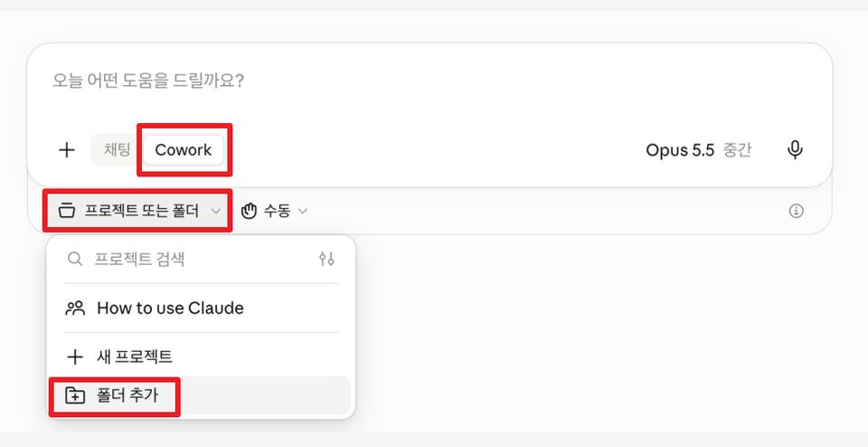
③ 항상 허용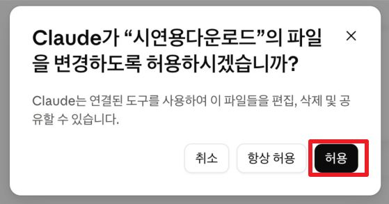
- 아래 두 줄을 붙여넣습니다.
이 다운로드 폴더 정리해 줘.
이름만 보지 말고, 애매한 건 열어 보고 판단해 줘.
이렇게 나옵니다
실제 화면 보기 — 정리된 폴더와 클로드의 설명
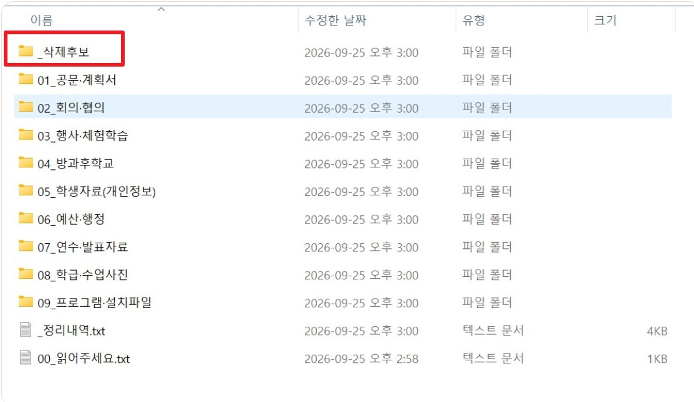
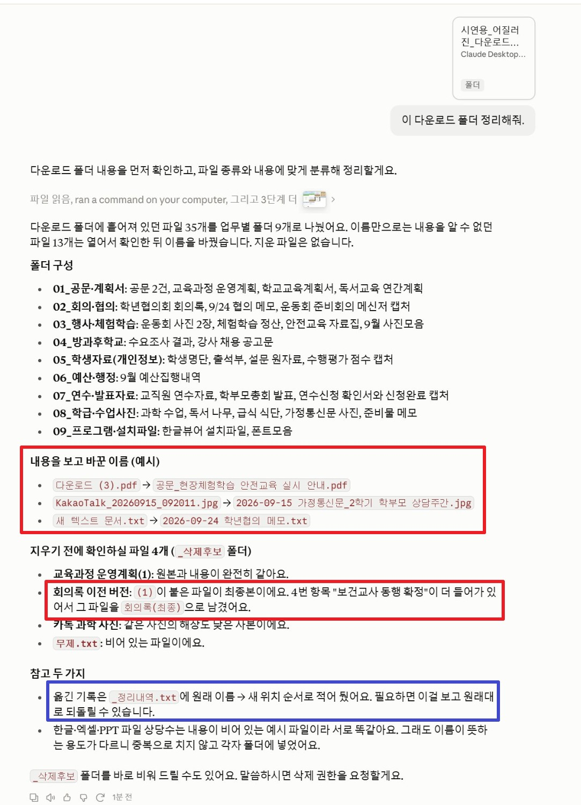
(최종)(1).docx
공문_현장체험학습 안전교육 실시 안내.pdf20260915_092011.jpg
2026-09-15 가정통신문_2학기 학부모 상담주간.jpg2026-09-24 학년협의 메모.txt, 회의록과 같은 폴더로_정리내역.txt(파란 칸)에 남겨 “되돌려 줘” 한마디면 원래대로 돌아갑니다.그래도 이름만 보고 나눴다면 다운로드 (3).pdf가 뭔지, 회의록 (1)이 최종본인지 모릅니다. 이렇게 한 줄 더 보내세요.
이름이 애매한 건 열어 보고 다시 판단해 줘. (1)이 붙은 건 진짜 같은 파일인지 내용도 비교해 줘.
나눈 방식이 마음에 안 들 때도 같습니다 — “사진은 날짜별로 다시 나눠 줘.”
한 번에 완벽하게 시키는 게 아니라, 보고 나서 한마디 더. 오늘 코워크의 원칙입니다.
오늘의 본 실습 — 안 낸 사람을 찾아냅니다
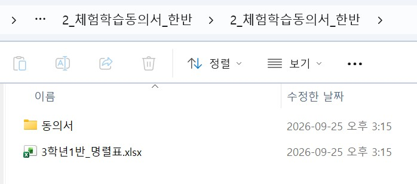
IMG_2834는 일부러 흐리게 찍은 사진입니다 — 오른쪽이 크게 연 모습입니다. 클로드가 이 한 장을 어떻게 처리하는지 보세요.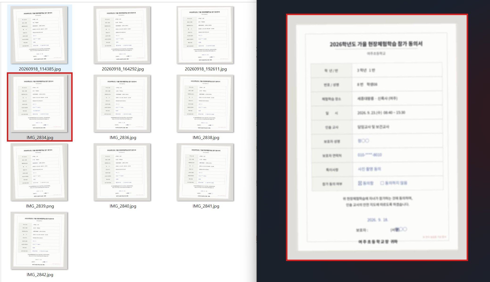
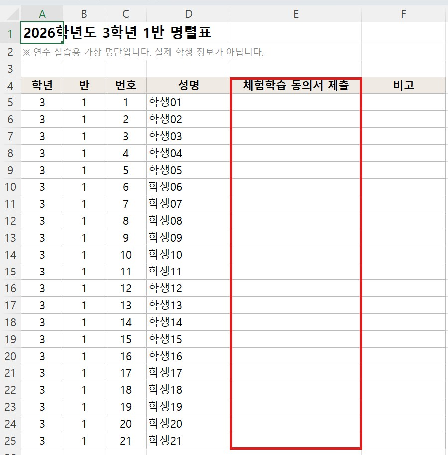
동의서가 카톡 사진 · 스캔본 · 폰 촬영본으로 섞여 있고, 이름은 전부 숫자입니다. 명렬표를 옆에 놓고 하나씩 열어 보시던 그 일입니다.
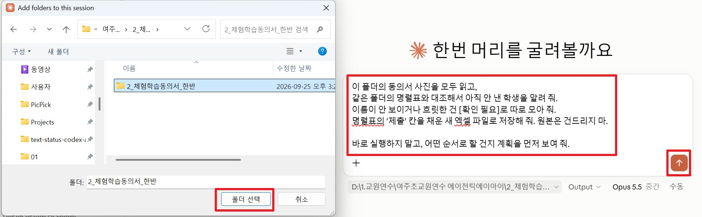
순서대로 보기 — 네 단계
- 위에서 받은 폴더를 압축 풀어 바탕화면에 둡니다.
- 풀면 안에 ‘2_체험학습동의서_한반’ 폴더가 있습니다. 연결할 것은 그 폴더입니다. 안에 명렬표 엑셀과 ‘동의서’ 폴더가 같이 보여야 합니다
- 폴더 추가로 그 폴더를 고릅니다. 몸풀기에서 하신 것과 같습니다 — 20초면 됩니다
- 아래를 붙여넣습니다. 올릴 파일은 없습니다.
이 폴더의 동의서 사진을 모두 읽고, 같은 폴더의 명렬표와 대조해서 아직 안 낸 학생을 알려 줘. 이름이 안 보이거나 흐릿한 건 [확인 필요]로 따로 모아 줘. 명렬표의 '제출' 칸을 채운 새 엑셀 파일로 저장해 줘. 원본은 건드리지 마. 바로 실행하지 말고, 어떤 순서로 할 건지 계획을 먼저 보여 줘.
대화 과정 보기 — 계획부터 결과까지
이렇게 나옵니다

IMG_2834를 보고 “8번 학생으로 보이지만 확정하지 않았습니다.” 짐작은 했지만 제출로 치지 않고 [확인 필요]로 남겼습니다. 그럴듯하게 “제출”로 채웠으면 아무도 몰랐을 겁니다.“새 엑셀 파일로 저장해 줘. 원본은 건드리지 마”가 없으면 원본에 바로 써 넣는 계획이 나올 수도 있습니다. 그래서 계획을 먼저 봅니다. 계획에 “원본을 수정해서…”가 보이면 실행 전에 “원본은 두고 새 파일로 해 줘” 한마디면 됩니다.
정답 확인 — 파일과 학생 짝
사진을 읽고, 명단과 대조하고, 빠진 사람을 찾았습니다. 만드는 것보다 찾아내는 것이 더 쓸모 있을 때가 많습니다.
- 본인 컴퓨터에서만 하세요. 학생 이름과 보호자 서명이 담긴 자료입니다. 오늘 명단은 가상 이름입니다
- 결과를 링크(아티팩트)로 만들지 마세요. 주소를 아는 사람이 볼 수 있습니다.
- 학습에 쓰이나요? 오늘 쓰는 Team 계정은 기본적으로 학습에 쓰지 않습니다. 다만 이런 대화에는 👍👎를 누르지 마세요 — 누르면 그 대화가 학습에 쓰일 수 있습니다. 개인 계정(무료·Pro)은 설정 → 개인정보보호에서 학습 사용을 꺼 두세요.
보여드립니다 — 사진 뭉치가 활동별 폴더로
여기는 따라 하지 않으셔도 됩니다. 화면으로 보시기만 하세요. 교안에 남아 있으니 학교에서 해 보시면 됩니다.
체험학습 다녀오면 폰에 사진이 수십 장입니다. 파일 이름은 전부 IMG_번호라, 앨범을 만들거나 학급 누리집에 올리려면 하나씩 열어 보고 나누는 일이 남습니다.
이 폴더의 사진을 모두 열어보고 무엇을 찍은 것인지 파악해 줘. 그런 다음 활동별로 폴더를 만들어서 나누고, 파일 이름을 [날짜_활동_번호] 형식으로 바꿔 줘. - 체험학습 날짜는 2026년 9월 18일이야. 날짜는 20260918로 써 - 번호는 01, 02처럼 두 자리로 - 흔들리거나 잘못 찍힌 사진은 '버릴것' 폴더에 모아 줘 - 지우지는 말 것 - 바꾸기 전에 어떻게 바꿀 건지 표로 먼저 보여 줘
이렇게 나옵니다 — 바꾸기 전에 표부터
표를 잘 보면 버릴 사진에도 새 이름을 줘서 전세버스탑승_02가 비고, 남는 사진 번호가 01 · 03으로 건너뜁니다. 실행 전에 이렇게 한 줄이면 바로잡힙니다.
버릴것으로 가는 사진은 이름을 바꾸지 말고, 남는 사진만 01부터 다시 번호를 매겨 줘.
폴더로 나누는 게 번거로우시면, 결과를 보고 한 줄만 더 보내세요. 폴더 없이 한 폴더 안에서 이름만으로 활동이 구분되고, 버릴 사진은 이름 앞에 ‘버릴것_’이 붙습니다.
폴더 삭제하고 파일명으로만 해 줘.
이렇게 바뀝니다 — 대화 화면
폴더 하나에 사진 열세 장. 이름만 보고도 언제 · 무엇을 찍었는지 압니다. 활동끼리 모여 있고, 버릴 사진은 맨 아래로 모였습니다. 지운 사진은 없습니다.
결과를 바꾸는 세 마디
코워크는 계획 → 실행 → 점검으로 움직입니다. 그 세 자리에 한마디씩 얹으면 결과가 달라집니다. 셋을 다 쓰실 필요는 없습니다.
바로 실행하지 말고, 어떤 순서로 할 건지 계획을 먼저 보여 줘. 내가 확인하면 그때 진행해 줘.
맡겨도 됩니다
시키세요
1단계: 먼저 이 폴더의 엑셀 파일을 읽고, 핵심 숫자만 정리해 줘. (확인 후) 2단계: 정리한 숫자로 보고서 목차를 잡아 줘. (확인 후) 3단계: 목차대로 보고서를 써 줘.
클로드가 자기를 여럿으로 나눠 동시에 일하게 하는 방법입니다. 스무 장을 한 장씩 차례로 읽는 대신, 셋으로 나눠 동시에 읽고 마지막에 한 명이 모아서 정리합니다.
자료를 셋으로 나눠서 서브 에이전트 세 개로 병렬로 처리해 줘.
원본과 하나씩 대조해서 검증을 한 번 더 해 줘. 숫자와 날짜, 이름이 원본과 다른 곳이 있으면 알려 줘.
그다음은 사람이 봅니다 — 네 곳만. 다 읽으실 필요 없습니다.
의도대로 됐는지
원본과 대조
원하는 폴더에 저장됐는지
작업이 끝나면 어떤 파일을 새로 만들었고, 어떤 파일을 무엇으로 바꿨는지 요약해 줘.
코워크는 일을 잘하지만 만능은 아닙니다. 다섯 가지만 알아 두시면 덜 헤매십니다. 그중 두 가지는 폴더 지침(claude.md) 하나로 풀립니다.
앞 대화를 모릅니다
그래서 → 이어 가야 할 규칙은 폴더 지침에 적어 둡니다.
양이 정해져 있습니다
그래서 → 폴더를 나눠서, 한 번에 한 가지 일로 맡깁니다.
스스로 알지 못합니다
그래서 → 최신 정보는 공문 원문을 올리거나, 검색해서 찾은 곳을 알려 달라고 합니다.
컴퓨터가 켜져 있어야 합니다
그래서 → 긴 폴더 작업을 맡길 때는 절전을 잠시 꺼 둡니다.
결과가 조금씩 다릅니다
그래서 → 마음에 드는 결과가 나오면 그때 쓴 방식을 폴더 지침에 남겨 둡니다. 다음에도 같은 모양으로 나옵니다.
이 폴더의 파일들을 살펴보고, 앞으로 이 폴더에서 일할 때 지킬 작업 규칙을 정리해서 폴더 지침(claude.md)으로 만들어 줘.
프로젝트 — 업무 하나에 방 하나
과정안 방 하나를 같이 만들어 봅니다.
자리 · 방법 · 손
셋은 고르는 게 아니라 겹쳐 쓰는 것입니다. 프로젝트 안에서도 스킬은 그대로 켜집니다.
안 바뀌는 참고 자료는 프로젝트에 올려 두고,
계속 쌓이는 내 파일은 코워크로 맡긴다.
프로젝트는 클로드 책상 서랍에 자료 복사본을 넣어 두는 것이고, 코워크는 내 책상 서랍 열쇠를 건네는 것입니다.
표로 보면 — 파일이 어디 있고, 결과가 어디 남나
| 구분 | 프로젝트 | 코워크 (폴더) |
|---|---|---|
| 파일이 있는 곳 | 클로드 쪽에 올린 복사본 | 내 컴퓨터에 그대로 |
| 읽는 방식 | 질문에 맞는 부분만 찾아 읽습니다 | 필요할 때마다 폴더에서 직접 엽니다 |
| 결과물 | 대화창에 나오고, 내려받습니다 | 내 폴더에 파일로 저장됩니다 |
| 파일이 바뀌면 | 다시 올려야 합니다 | 폴더에 넣기만 하면 됩니다 |
| 계정 | 무료에서도 됩니다 | Pro 이상 · 데스크탑 앱 |
| 맞는 자료 | 성취기준, 작년 과정안, 양식처럼 한 해 내내 참고만 하는 것 | 사진, 동의서, 실적 엑셀처럼 계속 쌓이고 정리해야 하는 것 |
학교에서는 이럴 때
기준은 하나입니다 — 한 번 쓰고 끝나면 그냥 대화창, 한 해 내내 붙잡고 있으면 프로젝트.
과정안 방 — 같이 만들어 봅니다
왜 프로젝트가 필요한가요
과정안을 쓸 때 제일 손이 가는 칸이 관련 성취기준입니다. 클로드는 성취기준 목록을 외우고 있지 않습니다. 그냥 시키면 [확인 필요]로 비워 두거나, 더 나쁘면 그럴듯한 코드를 지어냅니다. 교육과정이 바뀐 뒤라면 더 그렇습니다.
먼저 자료 폴더를 준비합니다 — 오늘은 4학년 사회
따로 받기 — 한 파일씩 필요할 때
📖 2022 개정 교육과정에 따른 3~4학년군 성취수준 — 넘겨 보기
다른 학년군 성취수준 — 집에서 쓰실 때
방을 만듭니다
- 입력창 아래 프로젝트 또는 폴더 → ＋ 새 프로젝트.
- 프로젝트 생성 창이 뜹니다. 두 칸만 채웁니다. 컨텍스트는 비워 두셔도 됩니다
교수학습과정안
성취기준에 맞는 교수·학습과정안을 만드는 방
- 프로젝트 생성을 누릅니다.
- 파일 변경 허용을 묻는 창이 뜨면 항상 허용을 누릅니다.
- 방이 열리면 오른쪽 지침 → 추가를 눌러 아래 지침을 붙여넣고 저장합니다.
- 오른쪽 폴더 줄의 ＋를 눌러 바탕화면의 ‘교수학습과정안’ 폴더를 고릅니다. 폴더 줄에 폴더 이름이 보이면 성공입니다.
나는 여주초등학교 교사야. 교수·학습과정안을 만들 때 아래를 지켜 줘. - 관련 성취기준은 올려 둔 성취기준 파일에서 찾아서 코드와 문장을 그대로 넣어 줘 - 목록에 없는 코드는 절대 만들지 마. 못 찾으면 [확인 필요]로 남기고, 비슷한 후보를 세 개만 보여 줘 - 학습목표는 성취기준을 그 차시 수준으로 좁혀서 한 문장으로 써 줘 - 표의 칸과 줄 수는 늘리지 말고 글자만 채워 줘 - 내가 주지 않은 내용은 지어내지 말고 [확인 필요]로 남겨 줘 모르는 건 물어봐.
지침 → 추가를 누르면 ‘프로젝트 지침 설정’ 창이 뜹니다. 위 지침을 붙여넣고 지침 저장을 누르세요.
폴더는 이렇게 붙입니다. 방 오른쪽 폴더 줄에 폴더 이름이 보이면 성공이고, 없으면 ＋를 눌러 폴더를 고른 뒤 폴더 선택을 누르세요.
무료 계정이라면 — 파일 올릴 때 알아 두실 것
| 구분 | 무료 | Pro 이상 (팀 계정 포함) |
|---|---|---|
| 프로젝트 개수 | 5개까지 | 제한 없음 |
| 파일 한 개 크기 | 30MB까지 (같음) | |
| 파일 개수 | 제한 없음 (같음) | |
| 넣을 수 있는 총량 | 모든 파일을 합쳐 클로드가 한 번에 읽을 수 있는 양까지 | 넉넉합니다 — 필요한 부분만 찾아 읽습니다 |
(컨텍스트)
방 안에서 과정안을 시킵니다
- 방 안에서 새 대화를 엽니다. 방 밖의 대화창에서 하면 성취기준 파일을 못 봅니다
- 아래를 붙여넣습니다.
4학년 사회 · 민주주의와 자치 · 3/6차시로 과정안 만들어 줘. 10월 13일(화) 3교시, 4학년 2반 교실. 우리 지역 주민 참여 사례(주민 제안, 주민 회의)를 조사해 모둠별로 발표하는 수업이야. 태블릿과 패들렛을 써. 평가: 주민 참여가 왜 중요한지 사례를 들어 말할 수 있는가 모르는 건 물어봐.
이렇게 나옵니다
여주초_교수학습과정안_4학년사회_3차시.hwpx가 생겼습니다(빨간 칸). 본보기 원본은 그대로입니다.
완성본이 아니라 초안입니다. 대신 빈 서식 채우기, 성취기준 찾아 옮기기, 시간 맞추기처럼 손만 가는 일은 다 끝나 있습니다.
선생님은 [확인 필요] 네 칸과 활동 다듬기에만 시간을 쓰시면 됩니다.
(맨 위 큰 빨간 칸)
네 곳
(작은 빨간 칸)
평가
대화 과정 보기 — 질문 네 개부터 결과까지
더 좋은 초안을 받으려면
활동 2를 더 구체적으로 써 줘. 모둠별로 맡을 사례를 나눠 주고, 발표 시간은 모둠당 2분으로 해 줘.
동기유발을 우리 반 학급 회의 장면으로 바꿔 줘. 지난주에 체험학습 장소를 학급 회의로 정했어.
만드는 법 — 네 걸음
- 왼쪽 프로젝트 → ＋ 새 프로젝트
- 이름을 답니다. 「4학년 업무」처럼 업무 이름으로 지으세요.
- 방이 열리면 오른쪽 지침 → 추가에 매번 설명하기 귀찮은 것을 적습니다. 만들 때의 ‘목표’ 칸은 지침이 아닙니다
- 파일을 올립니다. 공문, 지난 안내장, 양식, 명렬표.
나는 여주초등학교 4학년 담임이고, 학년 업무를 맡고 있어. - 학부모께 나가는 문서는 높임말로 쓰고, 맺음은 '여주초등학교장'으로 해 - 날짜는 2026년 10월 1일(목) 형식, 시각은 09:00∼10:50 형식으로 써 - 올려둔 지난 안내장의 말투를 그대로 따라 써 - 자료에 없는 내용은 지어내지 말고 [확인 필요]로 남겨 줘
스킬과 같이 씁니다
알아 두실 것
파일
되나
대화창에 바로 올리실 때와 한도가 다릅니다.
| 파일을 어디에 | 몇 개까지 | 한 개 크기 |
|---|---|---|
| 대화창에 바로 | 20개 | 500MB |
| 프로젝트에 | 제한 없음 | 30MB |
마무리 — 오늘 가져가실 세 줄
스킬에서도, 코워크에서도, 프로젝트에서도 같은 세 줄을 썼습니다.
모르는 건 물어봐. 바로 하지 말고 계획을 먼저 보여 줘. 원본은 건드리지 마.
흐릿한 사진에서 잘못 읽은 값으로 표를 만들면, 그 뒤 단계는 전부 틀린 것 위에 쌓입니다. 그래서 1단계(모으기)는 사람이 한 번 보고 넘어가야 합니다. 묶는 건 2·3단계부터가 안전합니다.
제가 드린 스킬을 그대로만 쓰시면 학교마다 반마다 같은 문장이 나옵니다. 오늘 공문 스킬을 직접 만들어 보신 이유가 이것입니다. 내 말투와 내 순서로 고쳐서 쓰세요.
자동화의 목적은 선생님의 판단을 없애는 게 아니라, 선생님의 기준을 더 일관되게 적용하는 것입니다. 결과를 보고 고칠 곳을 정하는 건 끝까지 사람 몫입니다.
문서와 파일에 쓰던 시간을 줄여서 아이들과 눈 마주치는 시간으로 돌리자는 것이 오늘의 전부입니다.
좋은 자료는 좋은 수업과 꾸준한 관찰에서 나옵니다. 그건 아무도 대신 못 합니다.
아티팩트 — 말로 만드는 웹페이지
이 교안도 클로드가 만든 웹페이지입니다.
아티팩트가 무엇인가
대화창 옆에 따로 열리는 결과물 창입니다. 채팅 글자 속에 섞이지 않고, 제목이 붙고 저장되고 고칠 수 있는 덩어리요.
(HTML)
만든 뒤에 하실 수 있는 것
만드는 법 — 따로 없습니다
그냥 말씀하시면 됩니다. “○○ 웹페이지로 만들어 줘” 한마디면 오른쪽에 창이 하나 열립니다. 설치할 것도, 눌러 둘 것도 없습니다.
아이들이 눌러 가며 따라 하는 교안에, 선생님이 반별로 제출물을 모아 보는 교사용 대시보드까지 붙였습니다. 이것도 클로드와 대화로 만들었습니다.
https://doramge1984.github.io/pajuhak/새 창에서 열기 ↗실제 수업에 쓰는 페이지입니다. 둘러보기만 하시고 제출은 누르지 말아 주세요.
가정통신문을 종이로도 보내지만, 링크 하나로 같이 보내면 학부모께서 폰에서 바로 보십니다. 일정표, 준비물, 오시는 길, 자주 묻는 질문까지 한 페이지에요.
아래 안내장 내용으로 학부모용 안내 웹페이지를 만들어 줘.
- 폰에서 보기 편하게, 글씨는 크게
- 맨 위에 날짜·장소·준비물 세 가지가 먼저 보이게
- 준비물은 체크하며 볼 수 있는 목록으로
- 자주 묻는 질문 세 개를 접었다 펴지게. 답은 안내장에 있는 내용으로만
- 학교 대표번호 말고 개인 연락처는 넣지 마
- 안내장에 없는 내용은 지어내지 말고 [확인 필요]로 남겨 줘
4학년 가을 현장체험학습 · 국립과천과학관
11월 6일(금) 9시 출발, 15시쯤 학교 도착
대상 4학년 전체 · 비용 없음
(입장료·버스비는 적정규모학교 육성 예산, 보험료는 학교 예산)
점심 도시락 각자 · 신청서는 10월 30일(금)까지 담임에게
준비물: 간편복, 운동화, 물, 간식 조금, 우산, 개인 약, 이름표
일정: 09:00 출발 / 10:30 도착·안전교육 / 10:40 상설전시관
12:00 점심 / 13:00 천체투영관 / 14:00 출발 / 15:00 도착
설명만 있는 자료가 아니라 눌러 보고, 맞춰 보고, 움직여 보는 페이지입니다. 아래 버튼으로 학년 · 과목 · 활동 · 내용을 고르면 프롬프트가 바로 바뀝니다. 바뀐 곳은 색으로 표시됩니다.
여기서 한 걸음 더 가면, 아이들이 페이지에 써 넣은 답이 저장되어 선생님이 한자리에서 보실 수 있습니다. 누가 어디까지 했는지, 어떤 문제를 많이 틀렸는지요.
다만 이건 말 한마디로 끝나지 않습니다. 아이들 답을 쌓아 둘 저장소(데이터베이스)가 따로 있어야 하고, 그걸 선생님이 직접 만들어 연결해야 합니다. 보통 둘 중 하나를 씁니다.
선생님께 가장 익숙하고, 오늘 체험한 커피 룰렛이 이 방식입니다
실시간으로 여러 명이 동시에 쓰기 좋지만, 설정이 조금 더 어렵습니다
클로드는 페이지 코드와 연결용 코드, 설정 순서를 만들어 줍니다. 시트를 만들고, 코드를 붙여넣고, 배포하는 일은 선생님 몫입니다. 이렇게 시작하시면 됩니다.
이 페이지에서 아이들이 쓴 답을 구글 시트에 저장해서 나중에 모아 볼 수 있게 해 줘. 이름은 받지 말고 번호만 받아 줘. 앱스 스크립트 코드와, 시트 만들기부터 배포까지 순서를 처음 하는 사람도 따라 할 수 있게 알려 줘.
하시려면 — 이름 대신 번호나 모둠명만 받으세요. 학기가 끝나면 지우세요. 그리고 하시기 전에 학교 정보 담당 선생님께 한 번 여쭤보세요.
오늘 연수에서는 하지 않습니다. 이런 것도 된다는 것만 알고 가시면 됩니다.
한 페이지에 다 담기지 않을 때 — 용량은 16MB까지
아티팩트는 페이지 하나에 16MB까지입니다. 그림과 내려받을 파일도 페이지 안에 같이 들어가서 함께 셉니다. 사진 몇 장, 한글 양식 몇 개 정도는 괜찮습니다. 그런데 PDF 여러 개를 받게 하거나 사진이 많으면 금방 넘칩니다.
| 구분 | 아티팩트 (클로드) | 깃허브 Pages | 넷리파이 | 버셀 |
|---|---|---|---|---|
| 올리는 법 | 대화창에서 바로 | 저장소에 파일을 올리고 Pages를 켭니다 | 폴더를 끌어다 놓으면 끝 (Netlify Drop) | 깃허브 저장소를 연결합니다 |
| 주소 모양 | claude.ai/… | 아이디.github.io/… | 이름.netlify.app | 이름.vercel.app |
| 용량 | 16MB까지 — 그림·파일 포함 | 넉넉합니다 (웹에서 올릴 때 파일당 25MB) | 넉넉합니다 | 넉넉합니다 |
| 고칠 때 | “여기 고쳐 줘” 한마디 | 고친 파일을 다시 올립니다 | 폴더를 다시 끌어다 놓습니다 | 깃허브에 올리면 저절로 바뀝니다 |
| 가입 | 클로드 계정 | 깃허브 (무료) | 넷리파이 (무료) | 버셀 (무료 · 개인·비영리용) |
| 맞는 것 | 안내 페이지, 수업 퀴즈, 한 장짜리 자료 | 연수 교안, 자료실 — 이 교안이 여기 있습니다 | 가장 빨리 주소 하나 만들 때 | 자주 고치는 사이트, 깃허브를 이미 쓰는 분 |
어떻게 올리나 — 클로드에게 이렇게 말하면 됩니다
이 페이지를 깃허브 페이지(또는 넷리파이·버셀)에 올릴 수 있게 폴더로 만들어 줘. 그림은 img 폴더에, 내려받을 파일은 files 폴더에 나눠 넣고, index.html에서 그 파일들을 불러오게 해 줘.
- 클로드가 index.html · img 폴더 · files 폴더를 만들어 줍니다.
- 넷리파이라면 — 넷리파이 드롭(Netlify Drop) 화면에 그 폴더를 끌어다 놓으면 바로 주소가 나옵니다. 제일 쉽습니다.
- 깃허브라면 — 저장소를 하나 만들어 폴더 안 파일을 올리고, 설정에서 Pages를 켜면 주소가 나옵니다.
- 버셀이라면 — 위 깃허브 저장소를 버셀에서 가져오기(Import) 하면 주소가 나옵니다. 그다음부터는 깃허브에 올릴 때마다 저절로 바뀝니다.
마지막은 다 같이 들어와서 쓰는 앱입니다. 이름과 마실 메뉴를 적으시면 화면 앞 룰렛에 이름이 올라갑니다. 룰렛이 멈추는 분이 오늘의 커피 담당자입니다. 마지막에 작은 선물이 있습니다. 🎁
- 이름과 주문 메뉴를 적고 주문 목록에 등록을 누릅니다.
- 오른쪽 현재 접수 현황에 내 이름이 뜨는지 봅니다. 잘못 적으셨으면 지우기로 지우고 다시 적으세요.
- 화면 앞 룰렛을 함께 봅니다. 강사가 돌리면 모든 화면에서 같이 돌아갑니다.
이 앱은 어떻게 만들었나
이것도 클로드와 대화로 만들었습니다. 3번에서 본 대로 화면은 깃허브에 올렸고, 여러분이 적은 주문은 구글 시트에 모입니다. 그래서 모두의 화면이 같은 목록을 봅니다.
연수에서 쓸 '오늘의 커피 담당자' 웹앱을 만들어 줘. - 선생님들이 각자 휴대폰으로 들어와 이름과 메뉴를 적으면 목록에 쌓이게 - 강사가 룰렛을 돌리면 모두의 화면에서 같이 돌아가고, 멈춘 사람을 크게 보여 줘 - 당첨자가 나오면 메뉴별로 몇 잔인지 정리해 줘 - 저장은 구글 시트로 하고, 룰렛은 강사만 돌릴 수 있게 - 남색과 금색으로 차분하게
강사 화면
강사 화면에서만 룰렛 돌리기와 새 접수 시작하기 단추가 보입니다. 처음 누를 때 강사 암호를 한 번 묻습니다.
!!
개인 구글 계정(gmail)으로 하세요. 학교 계정은 "모든 사용자" 공개가 막혀 있는 경우가 많습니다.
- 시트 만들기 — 주소창에
sheets.new→ 제목을 오늘의 커피 담당자로. 시트 안에는 아무것도 적지 않습니다. - Apps Script 열기 — 메뉴 [확장 프로그램] → [Apps Script].
- 코드 붙여넣기 — Code.gs의 글을 모두 지우고 아래 코드를 붙여넣습니다. 맨 위
'강사암호'자리에 강사 암호를 넣고 Ctrl+S. - 배포 — 오른쪽 위 [배포] → [새 배포] → 톱니바퀴 → [웹 앱]. 실행: [나], 액세스 권한: [모든 사용자] → [배포].
- 권한 허용 — [액세스 승인] → 내 계정 → "확인하지 않은 앱"이 뜨면 [고급] → [(프로젝트)(으)로 이동] → [허용].
- 주소 넣기 — 나온 웹 앱 URL(…/exec)을 앱
index.html의var SCRIPT_URL = "";따옴표 안에 넣고, 깃허브 coffee 저장소에 올립니다. 주소는doramge1984.github.io/coffee/, 강사 화면은 끝에?host. - 확인 — 시크릿 창(Ctrl+Shift+N)에서 웹 앱 URL을 열어
{"ok":true,...}한 줄이 나오면 성공입니다. 로그인 화면이 나오면 4번의 액세스 권한이 [모든 사용자]가 아닌 것입니다.
/**
* 오늘의 커피 담당자 — 구글 시트 연결용 앱스 스크립트
* 룰렛 돌리기 · 새 접수 · 남의 주문 지우기는 아래 강사 암호가 있어야 됩니다.
* 룰렛은 한 번에 1~5명까지 뽑을 수 있습니다.
*/
var HOST_KEY = '강사암호'; // ← 따옴표 안에 강사 암호를 넣으세요
var SS = SpreadsheetApp.getActiveSpreadsheet();
function sheet_(name, headers) {
var s = SS.getSheetByName(name);
if (!s) { s = SS.insertSheet(name); s.appendRow(headers); }
return s;
}
function readState_() {
var s = sheet_('상태', ['키', '값']);
var v = s.getDataRange().getValues().slice(1), o = {};
v.forEach(function (r) { if (r[0] !== '') o[r[0]] = r[1]; });
if (!o.round) o.round = 1;
return o;
}
function writeState_(o) {
var s = sheet_('상태', ['키', '값']);
s.clearContents();
s.appendRow(['키', '값']);
Object.keys(o).forEach(function (k) { s.appendRow([k, o[k]]); });
}
function ordersSheet_() { return sheet_('주문', ['회차', '번호', '이름', '메뉴', '등록 시각', '확인값']); }
function orders_(round) {
var v = ordersSheet_().getDataRange().getValues().slice(1);
return v.filter(function (r) { return String(r[0]) === String(round); })
.map(function (r) { return { id: String(r[1]), name: String(r[2]), menu: String(r[3]), token: String(r[5]) }; });
}
function out_(o) {
return ContentService.createTextOutput(JSON.stringify(o)).setMimeType(ContentService.MimeType.JSON);
}
function view_() {
var st = readState_();
var list = orders_(st.round).map(function (o) { return { id: o.id, name: o.name, menu: o.menu }; });
var ws = [];
if (st.winners) { try { ws = JSON.parse(st.winners); } catch (e) { ws = []; } }
else if (st.winnerId) { ws = [{ id: String(st.winnerId), name: String(st.winnerName), menu: String(st.winnerMenu) }]; }
var w = ws.length ? { id: ws[0].id, name: ws[0].name, menu: ws[0].menu, at: String(st.spinAt) } : null;
return { ok: true, round: Number(st.round), orders: list, winner: w, winners: ws };
}
function clean_(t, n) { return String(t || '').replace(/[\r\n\t]/g, ' ').trim().slice(0, n); }
function doGet() { return out_(view_()); }
function doPost(e) {
var lock = LockService.getScriptLock();
lock.waitLock(10000);
try {
var b = JSON.parse((e && e.postData && e.postData.contents) || '{}');
var st = readState_();
var isHost = String(b.key || '') === HOST_KEY;
if (b.action === 'add') {
var name = clean_(b.name, 12), menu = clean_(b.menu, 24);
if (!name || !menu) return out_({ ok: false, error: '이름과 메뉴를 모두 적어 주세요.' });
if (orders_(st.round).length >= 80) return out_({ ok: false, error: '이번 회차는 가득 찼습니다.' });
var id = Utilities.getUuid().slice(0, 8);
ordersSheet_().appendRow([st.round, id, name, menu, new Date(), clean_(b.token, 40)]);
}
else if (b.action === 'delete') {
var sh = ordersSheet_(), v = sh.getDataRange().getValues();
for (var i = v.length - 1; i >= 1; i--) {
if (String(v[i][0]) === String(st.round) && String(v[i][1]) === String(b.id)) {
if (isHost || (b.token && String(v[i][5]) === String(b.token))) sh.deleteRow(i + 1);
else return out_({ ok: false, error: '내가 등록한 주문만 지울 수 있습니다.' });
break;
}
}
}
else if (b.action === 'spin') {
if (!isHost) return out_({ ok: false, error: '룰렛은 강사만 돌릴 수 있습니다.' });
var list = orders_(st.round);
if (list.length < 2) return out_({ ok: false, error: '두 분 이상 등록해야 돌릴 수 있습니다.' });
var cnt = Math.max(1, Math.min(5, Number(b.count) || 1, list.length));
var pool = list.slice();
for (var i = pool.length - 1; i > 0; i--) { var j = Math.floor(Math.random() * (i + 1)); var t = pool[i]; pool[i] = pool[j]; pool[j] = t; }
var picked = pool.slice(0, cnt).map(function (o) { return { id: o.id, name: o.name, menu: o.menu }; });
writeState_({ round: st.round, winners: JSON.stringify(picked), spinAt: String(Date.now()) });
}
else if (b.action === 'reset') {
if (!isHost) return out_({ ok: false, error: '새 접수는 강사만 시작할 수 있습니다.' });
writeState_({ round: Number(st.round) + 1 });
}
return out_(view_());
} finally {
lock.releaseLock();
}
}
선물
오늘 연수에서는 다루지 않습니다. 그런데 쓰시면 제일 자주 쓰시게 될 것들입니다.
| 기능 | 무료 | Pro 이상 |
|---|---|---|
| 스킬 만들기 · 쓰기 · 올리기 | ○ | ○ |
| 채팅에서 파일 올려 작업 | ○ | ○ |
| 아티팩트(문서·웹페이지 만들기) | ○ | ○ |
| 프로젝트(업무별 방 만들기) | ○ 5개까지 | ○ 제한 없음 |
| 코워크 — 폴더 연결 | ✕ | ○ |
| 루틴(예약 실행) · 플러그인 | ✕ | ○ |
클로드에게 화면을 보여드려야 할 때가 많습니다. 그런데 화면에 다 안 들어가는 긴 표가 문제입니다. 나이스 명단, 긴 공문, 스크롤을 내려야 끝이 보이는 웹페이지요.
Win+Shift+S)로는 보이는 만큼만 찍힙니다. 스크롤을 내리면서 이어 붙이려면 스크롤 캡처가 되는 프로그램이 필요합니다.- 위 단추로 한국어판을 내려받아 설치합니다.
- 실행하면 작은 창이 뜹니다. ‘스크롤 윈도우’를 고릅니다.
- 찍을 창을 한 번 누르면 저절로 스크롤하며 끝까지 찍습니다.
- 저장하고, 그 그림을 클로드 대화창에 끌어다 놓습니다.
이 화면에 있는 표를 그대로 엑셀로 만들어 줘. 흐릿해서 못 읽은 칸은 [확인 필요]로 남겨 줘.
학교 업무용 컴퓨터에 설치하실 때는 전산 담당 선생님께 한 번 여쭤보시는 게 좋습니다. 프로그램 설치를 막아 둔 학교가 있습니다.
지금까지는 내 폴더를 맡겼습니다. 이번엔 내가 열어 둔 웹페이지를 맡기는 이야기입니다.
로그인해 둔 사이트를 클로드가 같이 보고, 대신 눌러 줍니다. 화면을 캡처해 올릴 필요도, 내용을 복사해 붙여넣을 필요도 없습니다. 보고 있는 그 페이지 그대로 일을 시킵니다.
- 위 단추를 눌러 Chrome에 추가합니다.
- 클로드 계정으로 로그인합니다.
- 일을 시킬 페이지를 열어 두고, 확장 아이콘을 눌러 이 페이지에서 쓰기를 허용합니다.
- 평소처럼 말로 시킵니다.
이 페이지에 있는 표를 읽어서 엑셀로 정리해 줘. 이 설문 응답을 항목별로 요약하고, 많이 나온 의견 순서로 정리해 줘. 이 페이지의 안내문을 학부모가 읽기 쉬운 말로 다시 써 줘.
페이지마다 허용을 따로 주세요. 한 번에 다 허용하지 마시고, 그 일에 필요한 페이지만.
나이스·업무포털처럼 학생 정보가 있는 화면에서는 쓰지 마세요. 공공기관 시스템은 외부 프로그램의 자동 조작을 허용하지 않는 경우가 있습니다.
결제·본인인증 화면에서는 쓰지 마세요.
더 알아보기
처음부터 읽지 않으셔도 됩니다. 막히실 때 그 자리만 펼쳐 보세요.
- 본인 컴퓨터에서만 하세요. 공용 PC나 남의 계정에서 하지 않습니다.
- 결과를 링크(아티팩트)로 만들지 마세요. 학생 이름·사진·연락처가 든 페이지는 링크가 되면 주소를 아는 사람이 볼 수 있습니다.
- 지우라고 시키지 않습니다. ‘버릴것’ 폴더에 모아만 두게 하고, 지우는 건 사람이 봅니다.
- 폴더 하나만 맡기세요. 바탕화면이나 내 문서를 통째로 맡기지 않습니다.
- 원본은 두고 복사본에서 일하게 하세요. 작업용 폴더를 하나 만들어 복사해서 맡기면, 결과가 마음에 안 들어도 비우고 다시 복사하면 그만입니다.
비밀번호를 적어 둔 파일 · 인증서 · 상담 기록
그것만 보시면 됩니다. 있으면 다른 폴더로 옮겨 두세요.
클로드는 계산하지 않고 ‘예측’합니다. 무엇이 사실인지 따져 보는 게 아니라, 지금까지의 흐름에서 다음에 올 가장 그럴듯한 말을 이어 씁니다. 워낙 많이 배워서 대부분은 맞지만, 가끔 그럴듯하게 틀립니다. 이것을 환각이라고 부릅니다. 거짓말을 하려는 게 아니라, 자연스러운 말을 잇다 보니 사실과 어긋난 것이 섞여 나오는 것입니다.
원문을 올리고 그 안에서 찾게 하세요
공문 원문과 한 줄씩 대조하세요
받은 출처는 직접 열어 보세요
줄이는 습관 — 질문 끝에 한 줄씩 붙여 보세요. 완전히 없앨 수는 없지만 확실히 줄어듭니다.
모르는 건 모른다고 말해 줘. 근거가 된 자료나 출처도 함께 알려 줘. 이 답에서 확신이 낮은 부분을 표시해 줘.
클로드에 기본으로 들어 있는 문서 기능은 워드 · 엑셀 · PPT · PDF입니다. 한글(hwp)은 없습니다. 우리나라에서만 쓰는 형식이라서요.
한글에서 열어 다른 이름으로 저장 → hwpx로 바꿔 주세요
오늘 드린 한글 양식 스킬이 이걸로 만듭니다
몇 시간 뒤에 저절로 풀립니다. 잘못하신 게 아니고, 계정이 잠긴 것도 아닙니다.
스킬은 설명에 적힌 상황과 내 말이 맞을 때 켜집니다. 그래서 말을 조금 바꾸면 켜지는 경우가 많습니다.
- 만들 때 정한 다른 문구로 다시 말해 보세요.
- 그래도 안 되면 대화창 ＋ → 스킬에서 직접 고르세요. 고르면 반드시 켜집니다.
- 계속 안 켜지면 설명 줄을 고치세요 — “이 스킬 설명을 ○○할 때도 켜지게 고쳐 줘.”
한글 파일을 시켰는데 슬라이드나 문서로 나온다면, 입력창 아래 Output이 어딘가에 고정돼 있는 것입니다.
폴더를 맡겼는데도 클로드가 화면을 직접 조작하겠다고 물을 때가 있습니다. 아래 두 창입니다.
- 거부를 누릅니다.
- 이렇게 한 줄 보냅니다.
화면 조작 말고, 연결된 폴더의 파일을 직접 읽어서 해 줘.
화면이 자꾸 바뀌어서 낯설게 느껴지실 수 있습니다. 입력창 아래 한 줄만 읽으실 줄 알면 됩니다.
또는 폴더
클로드가 한 대화에서 기억하는 양을 책상 크기라고 생각해 보세요. 대화가 쌓일수록 책상이 차고, 가장 오래된 종이부터 밖으로 밀려납니다. 올린 문서와 클로드가 쓴 답도 같은 책상을 나눠 씁니다.
요즘은 책상이 차면 클로드가 앞의 대화를 알아서 요약·압축합니다. 그래서 훨씬 길게 이어 갈 수 있지만, 이때 초반에 말한 숫자나 세부 조건이 빠질 수 있습니다. “표로 해 줘”라고 했는데 한참 뒤에 글머리 기호로 나오는 식입니다.
새 대화 첫 메시지에 붙여 이어 가세요
대화가 막혀서 새 채팅을 열었더니, 방금까지 하던 일을 모른다 — 자주 겪는 일입니다. 클로드에는 메모리가 있지만, 메모리는 대화 전체가 아니라 요점만 기억합니다. “어디까지 했고 다음에 뭘 할지” 같은 작업 진행 상황은 새 채팅이 저절로 알지 못합니다.
① 계정 메모리 — 설정 → 메모리
새 채팅에서 이어 갈 때 이게 필요합니다
메모리의 본체입니다
② 프로젝트 메모리 — 프로젝트 화면 오른쪽 → 메모리 “보기”
위 목록은 이 프로젝트에서 클로드가 자동으로 저장한 요점입니다. 누르면 내용이 보이고, 틀린 게 있으면 고치라고 하시면 됩니다. 아래 “계정 메모리 사용”이 켜져 있으면 프로젝트 밖의 메모리(내 직업, 선호 등)도 함께 쓰고, 끄면 이 프로젝트의 메모리만 씁니다.
③ 그래서 — 새 채팅에서 이어 가는 법
이 프로젝트의 이전 대화에서 ○○ 하던 거 찾아서 읽고, 어디까지 했는지 정리한 다음 이어서 해 줘.
다음 대화에서 이어 갈 수 있게 지금까지 결정한 것, 만든 것, 남은 일을 정리해 줘.
④ 폴더를 연결해 두었다면 — 폴더 지침(claude.md)에 남기기
코워크나 폴더를 넣은 프로젝트에서 “지금까지 한 거 claude.md로 저장해 줘”라고 하면, 클로드가 그 폴더 안에 파일로 남깁니다. 다음에 같은 폴더를 연결하고 새 대화를 열면 먼저 읽고 시작합니다. 폴더 없이 일반 채팅에서 하면 내려받는 파일이 될 뿐, 다음 대화가 저절로 읽지는 않습니다.
규칙과 진행 상황은 나눠 두세요. claude.md는 원래 규칙을 적는 곳입니다. “어디까지 했는지”까지 계속 쌓으면 길어져서 규칙이 묻힙니다.
이 폴더의 작업 규칙은 claude.md에 정리하고, 지금까지 한 일과 남은 일은 작업기록.md에 따로 저장해 줘. claude.md 맨 위에 "시작할 때 작업기록.md를 먼저 읽는다"를 넣어 줘.
프로젝트에 폴더 붙이기 — 두 곳 어디서든 됩니다. 누르면 최근에 쓴 폴더가 뜨고, 없으면 맨 아래에서 새로 고르세요.
보고 있다
예전 버전이다
⑤ 폴더 없이(무료 계정) 프로젝트로 할 때
무료 계정도 프로젝트는 만들 수 있습니다(최대 5개). 폴더가 없어도 같은 효과를 낼 수 있고, 차이는 파일이 저절로 저장되느냐, 선생님이 올려 주느냐입니다.
폴더 없이(무료) — 클로드가 파일을 만들어 주면 선생님이 내려받습니다.
폴더 없이 — 프로젝트 파일에 올려 두면 저절로 읽습니다.
폴더 없이 — 새 파일을 받아 다시 올려야 합니다.
- 대화에서 “지금까지 한 일을 작업기록.md로 만들어 줘”라고 합니다.
- 만들어진 파일을 내려받습니다.
- 프로젝트 화면 오른쪽 파일 → 추가로 올립니다. 폴더 바로 위 칸입니다
- 이후 이 프로젝트에서 여는 모든 새 채팅이 이 파일을 참고해서 시작합니다.
규칙 → 프로젝트 지침에 붙여넣기 (claude.md 역할) · 진행 상황 → 작업기록.md로 받아 프로젝트 파일에 올리기
연수 시간에는 다루지 않은 것들입니다. 자료와 프롬프트가 다 있으니 학교에서 필요한 것 하나만 해 보세요.
이 폴더의 영수증 사진을 모두 읽고 날짜 / 상호 / 품목 / 금액으로 표를 만들어 줘. 읽기 어려운 건 [확인 필요]로 표시하고, 합계도 내 줘. 엑셀 파일로 저장해 줘.
[확인 필요]로 남기는지 보세요. 오늘 내내 확인할 지점입니다.행사가 끝나면 영수증이 남습니다. 모으기 → 만들기 → 점검하기, 세 번 이어서 시키면 됩니다.
이 폴더의 영수증 사진을 모두 읽고 날짜 / 상호 / 품목 / 금액으로 표를 만들어 줘. 읽기 어려운 건 [확인 필요]로 표시하고, 합계도 내 줘. 엑셀 파일로 저장해 줘.
방금 만든 엑셀로 정산 보고서 초안을 만들어 줘. 같은 폴더의 양식을 그대로 따르고, 항목별 소계와 총계를 넣어 줘. 영수증에서 확인 안 된 항목은 [확인 필요]로 남겨 줘.
보고서의 금액을 원본 영수증 사진과 하나씩 대조해서 검증을 한 번 더 해 줘. 합계를 다시 계산하고, 원본과 다른 곳이 있으면 알려 줘. 최종 판단은 내가 한다는 전제로 정리해 줘.
수행평가 결과물을 찍어 두면 파일 이름은 전부 IMG_3412입니다. 나중에 찾으려면 하나씩 열어봐야 합니다.
이 폴더의 사진을 모두 읽고, 사진에 적힌 학생 이름을 찾아 파일 이름을 [학년반_번호_이름] 형식으로 바꿔 줘. - 이름이 안 보이거나 흐릿한 건 바꾸지 말고 '확인필요' 폴더에 따로 모아 줘 - 원본은 지우지 말 것 - 바꾸기 전에 어떻게 바꿀 건지 표로 먼저 보여 줘
IMG_3412.jpg 가 30201_김서연.jpg 로 촤르륵 바뀝니다.담당 선생님이라면 아시는 그 일입니다. 실적 엑셀을 하나씩 열어 숫자를 옮겨 적고, 양식 표에 채우고, 마지막에 합계가 맞나 계산기로 다시 두드리는 일이요.
이 폴더 보고 2026년 AI·디지털 활용 선도학교 운영 계획서를 써 줘. 01_학교제공_양식의 계획서 양식을 그대로 쓰고, 02_작년계획서의 구성과 말투를 따라 줘. 03_가상자료_학교현황의 숫자를 근거로 삼아 줘. - 자료에 없는 숫자는 지어내지 말고 [확인 필요]로 남겨 줘 - 예산은 예산편성지침 요약의 기준을 넘지 않게 - 새 한글 파일로 '결과물' 폴더에 저장해 줘. 원본은 건드리지 마 바로 하지 말고, 어떤 순서로 할 건지 계획을 먼저 보여 줘.
같은 폴더에서 이번엔 운영보고서 및 정산서를 써 줘. 04_가상자료_운영실적의 엑셀을 전부 읽고 실적 표를 채워 줘. 예산집행내역의 합계가 정산서 총계와 맞는지 확인해서 알려 줘. 안 맞으면 어디가 얼마나 다른지 짚어 줘. 근거가 없는 칸은 [확인 필요]로 남기고, 마지막에 그 목록을 따로 보여 줘.
00_작업규칙(클로드용).md가 있습니다. 문체·숫자·개인정보 규칙이 적혀 있어 매번 시키지 않아도 먼저 읽고 지킵니다. 담당 업무마다 이 파일 하나씩 만들어 두시면, 내년 담당 선생님께 폴더째로 넘어갑니다.루틴 — 정해 둔 때가 되면 저절로 돕니다. 한 번 말해 두면 매주 같은 요일, 같은 시각에 알아서 합니다. 만들어 둔 것은 ‘예정됨’에서 확인하고 끌 수 있습니다.
매주 금요일 오후 4시에, 이 폴더의 다음 주 행사 메모를 읽고 주간학습안내 초안을 한글 파일로 만들어 줘. 메모에 없는 내용은 [확인 필요]로 남겨 줘.
플러그인 — 2번의 영수증 정산처럼 셋을 매번 차례로 시키는 대신, 하나로 묶어 두는 기능이 있습니다. 다음부터는 폴더에 자료만 넣고 한 줄이면 셋이 다 돕니다.
지금 사용한 세 단계를 하나의 플러그인으로 묶어 줘. 이름은 '영수증 정산 한 바퀴'로 하고, 실행하면 모으기 → 만들기 → 점검하기가 순서대로 이어지게 만들어 줘.
“존댓말로 해 줘”, “초등 교사 입장에서”, “모르면 모른다고 해”… 매번 붙이는 말이 있다면 한 번만 적어 두세요. 그러면 모든 대화에 저절로 적용됩니다.
- 왼쪽 아래 프로필 → 설정 → 계정으로 들어갑니다.
- “Claude 지침” 칸을 찾습니다. 아래 그림의 빨간 네모입니다
- 아래 내용을 붙여넣고, 선생님 사정에 맞게 고칩니다.
나는 경기도 여주의 초등학교 교사야. 학교 업무와 수업 준비에 도움을 받고 싶어. - 존댓말로, 쉬운 말로 답해 줘. - 모르는 건 모른다고 말해 줘. 추측이면 추측이라고 밝혀 줘. - 규정·지침·날짜·숫자는 근거를 함께 적고, 확인이 필요하면 [확인 필요]라고 표시해 줘. - 최신 정보가 필요한 질문이면 검색해서 답하고, 찾은 곳을 알려 줘. - 모자란 정보는 지어내지 말고 먼저 물어봐 줘. - 학생 이름·연락처 같은 개인정보가 보이면 먼저 알려 줘. - 답이 길면 맨 위에 세 줄 요약을 붙여 줘.
(claude.md)
폴더 지침(claude.md) — 폴더마다 규칙을 적어 둡니다. 코워크는 새 대화를 열면 어제 한 말을 기억하지 못합니다. “가정통신문은 A4 세로로”를 매번 다시 말해야 하죠. 그 폴더에 규칙을 적어 두면, 그 폴더에서 일할 때마다 클로드가 먼저 읽고 시작합니다.
이 폴더의 파일들을 살펴보고, 앞으로 이 폴더에서 일할 때 지킬 작업 규칙을 정리해서 폴더 지침(claude.md)으로 만들어 줘.
- 가정통신문은 A4 세로, 맑은 고딕 11pt, 끝에 담임 이름을 넣는다. - 학생 이름이 들어간 파일은 이 폴더 밖으로 복사하지 않는다. - 파일 이름은 "날짜_내용" 형식으로 짓는다. (예: 0930_현장체험학습안내) - 날짜·시각·장소는 원본과 대조하고, 없는 정보는 [확인 필요]로 남긴다.
일을 시키기 전에 다섯 칸만 채워 보시면 프롬프트가 저절로 나옵니다.
내 폴더 · 드라이브
메일 · 웹 검색
정리 · 요약 · 비교
분류 · 점검
한글 · 엑셀 · PPT
워드 · 웹페이지
내 폴더 · 드라이브
메일 초안
지금 · 파일을 넣으면
매주 월요일
＋ → 커넥터 → 둘러보기
코워크가 사무 쪽이라면 이쪽은 제작 쪽입니다
이 페이지는 연수가 끝난 뒤에도 그대로 열립니다. 프롬프트도 실습자료도 전부 여기 있습니다.
학교 단톡방에 링크를 올려 두세요. 오늘 못 오신 분도 보실 수 있습니다. 암호는 20262026입니다.
궁금한 게 생기시면 — 그냥 클로드에게 물어보세요. “내가 가지고 있는 스킬이 뭐니?”, “이 스킬 어떻게 고쳐?” 대부분 그 자리에서 답이 나옵니다.